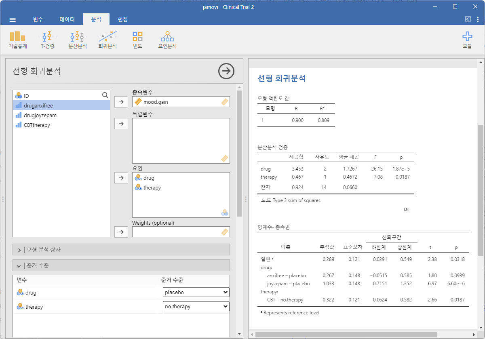

14 요인분산분석
지난 몇 개의 장에 걸쳐 우리는 많은 것을 다루었습니다. 두 개의 범주를 가진 하나의 명목 예측변수가 있을 때 사용할 수 있는 통계적 검정(예: Chapter 11 의 \(t\)-검정)이나 세 개 이상의 집단이 있을 때 사용할 수 있는 통계적 검정(Chapter 13 의 일원분산분석)을 살펴보았습니다. 또한, Chapter 12 에서는 여러 개의 연속형 예측변수를 사용하여 하나의 결과변수를 설명하는 통계적 모형을 구축하는 강력한 개념을 도입하였습니다. 예를 들어, 회귀 모형을 사용하여 학생이 독해력 시험에서 범한 오류의 수를 시험 공부 시간과 표준화된 IQ 시험 점수를 기반으로 예측할 수 있습니다.
이번 장의 목표는 다중 예측변수를 사용하는 개념을 ANOVA 틀로 확장하는 것입니다. 예를 들어, 우리가 세 개의 다른 학교에서 학생들의 성취도를 측정하기 위해 독해력 시험을 사용한다고 가정해 보겠습니다. 또한, 남학생과 여학생이 서로 다른 속도로 발달하기 때문에 평균적으로 서로 다른 성과를 보일 것이라고 예상하고 있습니다. 각 학생은 성별과 학교를 기준으로 두 가지 방식으로 분류됩니다. 우리가 하고 싶은 것은 이 두 가지 집단 변수를 기반으로 독해력 점수를 분석하는 것입니다. 이를 수행하는 도구를 일반적으로 요인분산분석(factorial ANOVA)라고 합니다. 특히, 이러한 분석에서 두 개의 집단 변수를 고려하게 되므로, Chapter 13 에서 수행한 일원분산분석과 구분하여, 이를 이원분산분석(two-way ANOVA)이라고 부르기도 합니다.
14.1 요인분산분석 1: 균형 설계, 주효과 분석
Chapter 13 에서 분산분석을 논의할 때, 우리는 비교적 단순한 실험 설계를 가정하였습니다. 각 개인은 여러 집단 중 하나에 속하며, 우리는 이 집단들이 특정 결과변수에 대해 서로 다른 평균 점수를 가지는지 알고자 하였습니다. 이번 절에서는 요인 설계(factorial design)라고 알려진 더 넓은 범주의 실험 설계를 논의하겠습니다. 요인 설계에서는 하나 이상의 집단 변수를 포함하게 됩니다. 앞서 이와 같은 설계가 발생할 수 있는 한 가지 예를 들었습니다. 또 다른 예는 Chapter 13 에서 살펴본 것으로, 서로 다른 약물(drug)이 개인이 경험하는 기분 향상(mood.gain)에 미치는 영향을 연구한 경우입니다. 그 장에서 우리는 약물의 유의한 효과를 발견하였지만, 장의 마지막에서는 치료(therapy)의 효과가 있는지도 분석하였습니다. 치료의 효과는 발견되지 않았지만, 동일한 결과변수를 예측하기 위해 두 개의 별도 분석을 수행하는 것은 다소 걱정스러운 부분이 있습니다. 어쩌면 실제로 치료가 기분 향상에 영향을 미치지만, 약물의 효과에 의해 “숨겨져” 있어서 발견하지 못했을 수도 있습니다. 즉, 약물과 치료를 모두 예측변수로 포함하는 단일 분석을 수행하는 것이 필요합니다.
이 분석에서 각 개인은 제공받은 약물(3가지 수준을 가지는 요인)과 받은 치료(2가지 수준을 가지는 요인)에 의해 교차 분류됩니다. 이를 \(3 \times 2\) 요인 설계라고 합니다.
jamovi에서 ‘빈도분석’-‘분할표’ 분석을 사용하여 약물과 치료를 교차 집계하면, Figure 14.1 에 나타난 표를 얻을 수 있습니다 (자세한 내용은 Section 6.1 참조).
보시다시피, 두 요인의 가능한 모든 조합에 해당하는 참가자가 존재하므로 완전 교차된(completely crossed) 설계입니다. 또한, 각 집단의 참가자 수가 동일하므로 균형 설계(balanced design)입니다. 이번 절에서는 균형 설계에서 데이터를 분석하는 방법을 다룰 것입니다. 이는 가장 단순한 경우이기 때문입니다. 반면, 불균형 설계(unbalanced design)의 경우 분석 과정이 다소 지루하고 복잡해지므로, 이에 대한 논의는 잠시 미뤄두겠습니다.
Tip 14.1. 실습: Clinical Trial 데이터의 분할표
이 실습을 하려면 Tip 3.1 을 수행하여 lsj-data 모듈이 설치되어 있어야 합니다.
‘파일’-‘열기’-’데이터 라이브러리’를 메뉴에서 선택합니다. 그러면 ’learning statistics with jamovi’라는 폴더가 보일 것입니다. 이 폴더를 선택합니다. 이미 이전 실습에서 이 폴더를 선택했으면 바로 이 폴더가 열릴 수도 있습니다.
데이터 라이브러리 목록에서 ’Clinical Trial’을 선택합니다.
스프레드시트 창에서 각 변수의 이름을 더블클릭하여 각 변수의 척도유형과 데이터 유형이 제대로 설정되어 있는지 확인하고 필요하면 이를 정정합니다.
ID: 아이디, 정수drug,therapy: 명명척도, 문자mood.gain: 연속변수, 소수
- 다음 단계를 거쳐 Figure 14.1 같은
drug을 행,therapy를 열로 하는 분할표를 구해봅니다.
- ‘분석’-‘빈도’-‘분할표’-‘독립표본’ 메뉴를 선택합니다.
drug을 ‘행’ 상자로,therapy를 열 상자로 이동합니다.
14.1.1 가설
일원분산분석과 마찬가지로, 요인분산분석은 모집단의 평균에 대한 특정 유형의 가설을 검정하는 도구입니다. 따라서 가장 먼저 해야 할 일은 우리가 실제로 어떤 가설을 검정하는지 명확히 하는 것입니다. 하지만 그 전에, 모집단 평균을 표현하는 간결하고 체계적인 표기법을 정하는 것이 유용합니다. 관측값이 두 개의 서로 다른 요인에 의해 교차 분류되기 때문에, 관심을 가질 수 있는 평균이 상당히 많습니다. 이를 이해하기 위해, 먼저 이러한 설계에서 계산할 수 있는 다양한 표본 평균을 생각해 보겠습니다. 가장 먼저 떠오르는 것은 각 집단 평균의 목록(Table 14.1)입니다.
| drug | therapy | mood.gain |
|---|---|---|
| placebo | no.therapy | 0.30 |
| anxifree | no.therapy | 0.40 |
| joyzepam | no.therapy | 1.47 |
| placebo | CBT | 0.60 |
| anxifree | CBT | 1.03 |
| joyzepam | CBT | 1.50 |
다음으로, Table 14.2 도 두 요인의 가능한 모든 조합에 대한 집단 평균 목록을 보여줍니다(예: 위약을 받고 치료를 받지 않은 사람, 위약을 받고 CBT를 받은 사람 등). 이러한 모든 값과 주변 평균(marginal means), 전체 평균(grand mean)을 하나의 표로 정리하는 것이 도움이 됩니다.
| no therapy | CBT | total | |
|---|---|---|---|
| placebo | 0.30 | 0.60 | 0.45 |
| anxifree | 0.40 | 1.03 | 0.72 |
| joyzepam | 1.47 | 1.50 | 1.48 |
| total | 0.72 | 1.04 | 0.88 |
이러한 평균들은 모두 표본 통계량이며, 연구에서 수집한 특정 관측값을 기반으로 한 수치입니다. 하지만 우리가 관심을 가지는 것은 이와 대응되는 모집단의 모수, 즉 보다 넓은 모집단 내에서 존재하는 참된 평균입니다. 이러한 모집단 평균 또한 유사한 표로 정리할 수 있지만, 이를 위해서는 약간의 수학적 표기법이 필요합니다(Table 14.3). 보통 모집단 평균을 나타낼 때 기호 \(\mu\)를 사용합니다. 하지만 평균이 여러 개 있기 때문에, 이를 구별하기 위해 첨자를 사용해야 합니다.
| no therapy | CBT | total | |
|---|---|---|---|
| placebo | \( \mu_{11} \) | \( \mu_{12} \) | |
| anxifree | \( \mu_{21} \) | \( \mu_{22} \) | |
| joyzepam | \( \mu_{31} \) | \( \mu_{32} \) | |
| total |
표기법에 대하여 설명하자면, 이 표는 두 개의 요인을 기준으로 정의됩니다. 각 행은 요인 A(이 경우 약물)의 서로 다른 수준을 나타내며, 각 열(column)은 요인 B(이 경우 치료)의 서로 다른 수준을 나타냅니다. 만약 \(R\)이 표의 행 개수이고, \(C\)가 열 개수라면, 이를 \(R \times C\) 요인분산분석이라고 합니다. 이번 경우에는 \(R = 3\), \(C = 2\)입니다. 특정 행과 열을 나타내기 위해 소문자 첨자를 사용하며, 예를 들어 \(\mu_{rc}\)는 요인 A의 \(r\)번째 수준(즉, \(r\)번째 행)과 요인 B의 \(c\)번째 수준(즉, \(c\)번째 열)에 해당하는 모집단 평균을 의미합니다.1
그렇다면 나머지 항목들은 어떻게 표현할까요? 예를 들어, CBT를 받았는지와 관계없이 Joyzepam을 투여받은 전체 (가상의) 모집단에서 기분 향상의 평균은 어떻게 표현할 수 있을까요? 이를 나타내기 위해 “점(dot) 표기법”을 사용합니다. Joyzepam의 경우, 표의 세 번째 행에 해당하는 평균을 의미하며, 두 개의 셀 평균(\(\mu_{31}\)과 \(\mu_{32}\))을 평균 내어 계산합니다. 이 평균을 주변 평균(marginal mean)이라고 하며, 이를 \(\mu_{3.}\)로 나타냅니다. 마찬가지로, CBT에 대한 주변 평균은 표의 두 번째 열과 관련된 모집단 평균을 의미하며, 모든 행에 대해 평균을 구한 것입니다(즉, 주변화(marginalisation)된 값).2 따라서 모집단 평균을 정리한 전체 표는 Table 14.4 같이 나타낼 수 있습니다.
| no therapy | CBT | total | |
|---|---|---|---|
| placebo | \( \mu_{11} \) | \( \mu_{12} \) | \( \mu_{1.} \) |
| anxifree | \( \mu_{21} \) | \( \mu_{22} \) | \( \mu_{2.} \) |
| joyzepam | \( \mu_{31} \) | \( \mu_{32} \) | \( \mu_{3.} \) |
| total | \( \mu_{.1} \) | \( \mu_{.2} \) | \( \mu_{..} \) |
이제 이러한 표기법을 정의했으므로, 가설을 공식적으로 표현하는 것이 훨씬 쉬워졌습니다. 이번 분석의 목표가 두 가지라고 가정해 보겠습니다. 첫째, 약물 선택이 기분 향상에 영향을 미치는지 확인하는 것입니다. 둘째, CBT가 기분 향상에 영향을 미치는지 확인하는 것입니다. 물론 이 외에도 설정할 수 있는 가설이 많지만, 이후 [요인분산분석 2: 균형 설계, 상호작용 해석]에서 또 다른 중요한 가설의 예를 살펴볼 것입니다. 하지만 지금은 가장 단순한 두 가지 가설부터 시작하겠습니다.
먼저 약물 효과에 대한 검정을 고려해 보겠습니다. 만약 약물이 영향을 미치지 않는다면, 모든 행 평균이 동일해야 합니다. 따라서 귀무가설은 행 평균이 동일하다는 것입니다. 반면, 약물이 영향을 미친다면 행 평균이 서로 다를 것입니다. 이를 공식적으로 표현하면 다음과 같습니다.
\[\text{귀무가설 } H_0: \text{ 행 평균이 동일하다, 즉 } \mu_{1. } = \mu_{2. } = \mu_{3. }\]
\[\text{대립가설 } H_1: \text{ 적어도 하나의 행 평균이 다르다}\]
이 가설들은 사실 Chapter 13 에서 일원분산분석을 수행할 때 설정한 것과 동일합니다. 그때는 \(\mu_{P}\)를 위약 집단의 평균 기분 향상을 나타내는 기호로 사용했으며, \(\mu_{A}\)와 \(\mu_{J}\)는 두 약물 집단의 평균을 의미했습니다. 그때의 귀무가설은 \(\mu_{P} = \mu_{A} = \mu_{J}\)이었습니다. 이번에도 동일한 가설을 다루지만, 다중 집단 변수를 고려해야 하므로 더 정교한 표기법이 필요했습니다.
이제 두 번째 가설 검정을 살펴보겠습니다. 약물과 마찬가지로, 심리 치료가 기분 향상에 영향을 미치지 않는다면 모든 열 평균이 동일해야 합니다. 따라서 귀무가설과 대립가설은 다음과 같이 설정됩니다.
\[\text{귀무가설 } H_0: \text{ 열 평균이 동일하다, 즉 } \mu_{ .1} = \mu_{ .2} \]
\[\text{대립가설 } H_1: \text{ 열 평균이 다르다, 즉 } \mu_{ .1} \neq \mu_{ .2}\]
14.1.2 jamovi에서 분석 실행하기
이전 절에서 설명한 귀무가설과 대립가설이 매우 익숙하게 느껴지실 것입니다. 이는 기본적으로 Chapter 13 에서 일원분산분석을 수행할 때 검정했던 가설과 동일합니다. 따라서 요인분산분석에서 사용하는 가설 검정이 Chapter 13 에서 사용한 \(F\)-검정과 본질적으로 동일할 것이라고 예상하실 것입니다. 즉, 제곱합(\(SS\)), 평균제곱(\(MS\)), 자유도(\(df\)), 그리고 최종적으로 \(p\)-값으로 변환할 수 있는 \(F\)-통계를 확인할 것으로 예상하셨을 것입니다. 네, 정확히 맞습니다. 그래서 이번에는 평소의 접근방식을 바꿔보려 합니다. 이 책에서는 일반적으로 특정 분석을 뒷받침하는 논리(그리고 어느 정도의 수학)를 먼저 설명한 후, jamovi에서 해당 분석을 수행하는 방법을 소개하는 방식으로 설명해 왔습니다. 하지만 이번에는 반대로 jamovi에서 먼저 분석을 수행하는 방법을 보여드리고, 이후에 논의를 진행하려고 합니다. 이렇게 하는 이유는 Chapter 13 에서 논의한 단순한 일원분산분석 도구와 이번 장에서 다룰 보다 복잡한 접근방식 사이의 유사성을 강조하기 위함입니다.
분석하려는 데이터가 균형 잡힌 요인설계에 해당한다면, 분산분석을 실행하는 것은 매우 간단합니다. 얼마나 쉬운지 확인하기 위해 Chapter 13 에서 수행한 원래 분석을 재현하는 것부터 시작해 보겠습니다. 혹시 잊으셨다면, 해당 분석에서는 단일 요인(즉, drug)을 사용하여 결과변수(즉, mood.gain)를 예측하였으며, Figure 14.2 의 결과를 얻었습니다.
이제 치료가 mood.gain과 관계가 있는지 궁금하다고 가정해 보겠습니다. Chapter 12 에서 다중회귀분석을 논의했을 때 보았던 내용을 고려하면, 분석에서 치료 변수를 두 번째 ’고정 요인’으로 추가하기만 하면 된다는 사실에 놀라지 않으실 것입니다. Figure 14.3 을 참고하십시오.
이 출력 결과는 읽기 쉽습니다. 표의 첫 번째 행은 약물 요인과 관련된 집단 간 제곱합(\(SS\)) 값을 보고하며, 이에 대응하는 집단 간 자유도(\(df\)) 값도 포함됩니다. 또한 평균제곱(\(MS\)), \(F\)-통계량 및 \(p\)-값도 계산됩니다. 또한 치료 요인과 관련된 행, 약물 요인과 치료 요인의 상호작용과 관련된 행(이는 아직 다루지 않을 것이며, 나중에 논의할 예정입니다), 그리고 잔차(즉, 집단 내 변동)와 관련된 행도 포함되어 있습니다.
각 개별 수치는 이미 익숙한 값들이며, 서로 간의 관계도 원래의 일원분산분석에서와 동일합니다. 평균제곱 값은 여전히 제곱합을 해당 자유도로 나눈 값입니다. 즉, 다음 식이 성립합니다.
\[MS=\frac{SS}{df}\]
이는 약물, 치료, 혹은 잔차를 다룰 때도 변함이 없습니다. 이를 확인하기 위해 제곱합 값이 어떻게 계산되었는지는 신경 쓰지 말고, jamovi가 \(SS\) 값을 올바르게 계산했다고 가정한 후 다른 값들이 논리적으로 맞는지 검증해 보겠습니다. 우선 약물 요인의 경우, \(3.45\)를 \(2\)로 나누면 평균제곱 값 \(1.73\)이 나옵니다. 치료 요인의 경우 자유도가 1이므로 계산이 더욱 간단합니다. \(0.47\) (제곱합 값)을 1로 나누면 평균제곱 값 \(0.47\)이 됩니다.
\(F\)-통계량과 \(p\)-값을 보면, 약물 요인과 치료 요인 각각에 해당하는 값이 존재합니다. 어떤 요인을 다루든지 간에 \(F\)-통계량은 해당 요인의 평균제곱 값을 잔차의 평균제곱 값으로 나누어 계산합니다. 약물 요인(Factor A)과 잔차(Factor R)에 대해 다음과 같이 표현할 수 있습니다.
\[F_A=\frac{MS_A}{MS_R}\]
치료 요인(Factor B)에도 동일한 공식을 적용할 수 있습니다. 약물 요인에 대해 평균제곱 값 \(1.73\)을 잔차의 평균제곱 값 \(0.05\)로 나누면, \(F\)-통계량이 \(31.71\)이 됩니다.3 치료 요인의 경우 \(0.47\)을 \(0.05\)로 나누면 \(F\)-통계량은 \(8.58\)이 됩니다. jamovi에서 보고된 값과 동일합니다.
또한 ANOVA 표에는 \(p\)-값 계산이 포함되어 있습니다. 다시 말하지만, 여기에는 새로운 내용이 없습니다. 두 요인 각각에 대해, 우리가 수행하려는 것은 요인과 결과변수 사이에 관계가 없다는 귀무가설을 검정하는 것입니다(이 부분에 대해서는 나중에 좀 더 정확하게 설명하겠습니다). 이를 위해, 우리는 일원배치 분산분석에서 사용했던 것과 유사한 전략을 따라 각 가설에 대한 \(F\)-통계량을 계산하였습니다. 이를 \(p\)-값으로 변환하려면, 귀무가설 하에서 \(F\)-통계량의 표본분포가 \(F\)-분포를 따른다는 점을 이용해야 합니다. 또한, 두 개의 자유도는 요인의 자유도와 잔차의 자유도입니다. 약물 요인의 경우, 자유도가 2와 12인 \(F\)-분포를 따르며(자유도에 대해서는 나중에 더 자세히 설명하겠습니다), 반면 치료 요인의 경우, 자유도가 1과 12인 \(F\)-분포를 따릅니다.
복잡한 요인분산분석의 ANOVA 표를 해석하는 방식이 단순한 일원분산분석의 ANOVA 표를 해석하는 방식과 크게 다르지 않다는 점을 이해할 수 있었기를 바랍니다. 요약하자면, 우리의 \(3 \times 2\) 설계에 대한 요인분산분석에서 약물 요인(\(F_{2,12} = 31.71, p < .001\))과 치료 요인(\(F_{1,12} = 8.58, p = .013\)) 모두에서 유의한 효과가 발견되었다는 것을 의미합니다. 보다 기술적으로 정확한 용어를 사용하면, 약물과 치료라는 두 가지의 주효과(main effects)가 있다 라고 말할 수 있습니다. 현재로서는 이러한 효과를 “주효과”라고 부르는 것이 다소 중복적으로 보일 수 있겠지만, 사실 이렇게 부르는 이유가 있습니다. 이후에 두 요인 사이의 “상호작용”을 다룰 것이며, 일반적으로 주효과와 상호작용 효과를 구분하여 설명하기 때문입니다.
Tip 14.2. 실습: 이원분산분석 - 균형 설계
Tip 14.1 에 이어서 균형 설계된 데이터에 대한 이원분산분석을 수행해 봅니다.
‘분석’-‘분산분석’-‘분산분석’ 메뉴를 선택합니다.
왼쪽의 ‘분산분석’ 설정 창에서 다음을 수행합니다.
mood.gain을 ‘종속변수’ 상자로 이동합니다.drug와therapy를 ‘고정요인’ 상자로 이동합니다.- ‘효과 크기’ 아래의 모든 옵션을 체크합니다.
- ‘가설검증’ 옵션을 확장하여 그 아래에 있는 모든 옵션을 체크합니다.

- 앞의 결과를 사용하여 다음 질문에 답해 봅시다.
drug는 ’mood.gain`에 영향을 미지치 않는다는 귀무가설은 유의수준 5%에서 채택되는가, 또는 기각되는가? 이 가설검정의 \(p\)-값은 얼마인가?therapy는 ’mood.gain`에 영향을 미지치 않는다는 귀무가설은 유의수준 5%에서 채택되는가, 또는 기각되는가? 이 가설검정의 \(p\)-값은 얼마인가?drug는mood.gain의 변동성의 몇 %를 설명하고 있는가?- 이원분산분석은 등분산성 가정을 만족하는 것으로 보이는가?
- 이원분산분석은 정규성 가정을 만족하는 것으로 보이는가?
14.1.3 제곱합은 어떻게 계산되는가?
이전 절에서 저는 두 가지 목표를 가지고 있었습니다. 첫째, 요인분산분석을 수행하는 jamovi 방법이 일원분산분석에서 사용했던 방법과 거의 동일하다는 것을 보여주는 것이었습니다. 유일한 차이점은 두 번째 요인이 추가된다는 점입니다. 둘째, 이 경우 ANOVA 표가 어떻게 생겼는지를 보여주어, 요인분산분석의 기본 논리와 구조가 일원분산분석과 동일하다는 것을 처음부터 이해할 수 있도록 하는 것이었습니다. 이러한 감각을 유지하려고 노력해 보십시오. 요인분산분석은 본질적으로 단순한 일원분산분석 모형과 거의 같은 방식으로 구축되므로, 이는 사실입니다. 다만, 세부 사항을 깊이 파고들기 시작하면 이러한 친숙한 느낌이 점차 사라지기 시작합니다. 전통적으로, 이러한 편안한 감각은 통계학 교과서 저자들에게 불만을 표출하고 싶은 충동으로 변화합니다.
좋습니다. 이제 몇 가지 세부 사항을 살펴보겠습니다. 이전 절에서 설명한 내용은 약물과 치료 요인의 주효과에 대한 가설 검정이 \(F\)-검정이라는 사실을 보여주지만, 제곱합(\(SS\)) 값이 어떻게 계산되는지는 설명하지 않았습니다. 또한 자유도(\(df\)) 값을 구하는 방법을 명확히 설명하지 않았는데, 이는 상대적으로 간단한 과정입니다. 지금은 예측변수로 두 개의 요인, 즉 요인 A와 요인 B만 있는 경우를 가정하겠습니다. 결과변수를 \(Y\)라고 하면, \(Y_{rci}\)는 집단 \(rc\)의 \(i\)번째 구성원과 관련된 결과를 나타냅니다(즉, 요인 A의 \(r\)번째 수준/행과 요인 B의 \(c\)번째 수준/열). 따라서 표본 평균을 \(\bar{Y}\)라고 하면, 이전과 동일한 표기법을 사용하여 집단 평균, 주변 평균(marginal means), 전체 평균(grand mean)을 나타낼 수 있습니다. 즉, \(\bar{Y}_{rc}\)는 요인 A의 \(r\)번째 수준과 요인 B의 \(c\)번째 수준에 대한 표본 평균이고, \(\bar{Y}_{r.}\)은 요인 A의 \(r\)번째 수준에 대한 주변 평균, \(\bar{Y}_{.c}\)는 요인 B의 \(c\)번째 수준에 대한 주변 평균, \(\bar{Y}_{..}\)은 전체 평균입니다. 다시 말해, 표본 평균을 모집단 평균과 동일한 표에 정리할 수 있습니다. 임상 시험 데이터의 경우의 평균 표는 Table 14.5 에 제시되어 있습니다.
| no therapy | CBT | total | |
|---|---|---|---|
| placebo | \( \bar{Y}_{11} \) | \( \bar{Y}_{12} \) | \( \bar{Y}_{1.} \) |
| anxifree | \( \bar{Y}_{21} \) | \( \bar{Y}_{22} \) | \( \bar{Y}_{2.} \) |
| joyzepam | \( \bar{Y}_{31} \) | \( \bar{Y}_{32} \) | \( \bar{Y}_{3.} \) |
| total | \( \bar{Y}_{.1} \) | \( \bar{Y}_{.2} \) | \( \bar{Y}_{..} \) |
이전에 제시한 표본 평균을 보면, \(\bar{Y}_{11} = 0.30\), \(\bar{Y}_{12} = 0.60\) 등입니다. 우리의 임상 시험 예제에서 약물 요인은 3개 수준, 치료 요인은 2개 수준을 가지므로, 실행하려는 분석은 \(3 \times 2\) 요인분산분석입니다. 그러나 우리는 보다 일반적인 형태로, 요인 A(행 요인)가 \(r\)개 수준을 가지고, 요인 B(열 요인)가 \(c\)개 수준을 가지는 \(r \times c\) 요인분산분석을 수행한다고 표현할 수 있습니다.
추가 기술적 설명
이제 표기법을 정리했으므로, 두 요인 각각의 제곱합 값을 비교적 익숙한 방식으로 계산할 수 있습니다. 요인 A의 경우, 집단 간 제곱합은 (행) 주변 평균 \(\bar{Y}_{1.}, \bar{Y}_{2.}\) 등이 전체 평균 \(\bar{Y}_{..}\)과 얼마나 다른지를 평가하여 계산됩니다. 이는 일원분산분석에서 했던 방식과 동일하게, \(\bar{Y}_{i.}\) 값과 \(\bar{Y}_{..}\) 값 간의 제곱 차이를 합산하여 계산됩니다. 구체적으로, 각 집단에 \(K\)명의 사람이 있다고 가정하면, 다음과 같이 계산됩니다.
\[SS_A=(K \times C)\sum_{r=1}^R (\bar{Y}_{r.}-\bar{Y}_{..})^2\]
일원분산분석과 마찬가지로, 이 공식에서 가장 흥미로운 부분은 수준 \(r\)과 관련된 제곱 편차입니다. 이 공식은 요인의 모든 \(R\) 수준에 대해 이러한 제곱 편차를 계산하고, 이를 합산한 후 \(K \times C\)를 곱하는 역할을 합니다. 이렇게 하는 이유는 설계 내에서 요인 A의 수준 \(r\)에 해당하는 여러 개의 셀이 존재하기 때문입니다. 실제로 요인 B의 가능한 각 수준마다 하나씩 총 \(C\)개의 셀이 존재합니다. 예를 들어, 우리의 예제에서는 “anxifree” 약물에 해당하는 두 개의 서로 다른 셀(무치료 집단과 CBT 집단)이 존재합니다. 뿐만 아니라, 각 셀에는 \(K\)개의 관측값이 존재합니다. 따라서 \(SS\) 값을 “관측값당” 집단 간 제곱합을 계산하는 양으로 변환하려면, \(K \times C\)를 곱해야 합니다. 요인 B의 경우 공식이 동일하지만, 일부 첨자가 바뀝니다.
\[SS_B=(K \times R)\sum_{c=1}^C (\bar{Y}_{.c}-\bar{Y}_{..})^2\]
이제 이 공식을 사용하여 이전 절의 jamovi 출력과 비교할 수 있습니다. 이러한 계산을 수행하는 데에는 스프레드시트 프로그램이 유용하므로 직접 시도해 보시기 바랍니다. 또한, Excel에서 수행한 예제는 clinicaltrial_factorialanova.xls 파일에서 확인할 수 있습니다.
먼저, 약물의 주효과에 대한 제곱합을 계산하겠습니다. 각 집단에는 총 \(K = 3\)명의 사람이 있고, 치료법의 종류는 \(C = 2\)가지입니다. 즉, 특정 약물을 받은 사람의 수는 \(3 \times 2 = 6\)명입니다. 이 계산을 스프레드시트 프로그램에서 수행하면, 약물의 주요 효과에 대한 제곱합 값이 3.45로 나옵니다. 이는 이전에 제시한 ANOVA 표(Figure 14.3)에서 약물 요인의 \(SS\) 값을 확인했을 때 얻는 값과 동일합니다.
같은 방법으로 치료법의 효과도 계산할 수 있습니다. 이번에도 각 집단에는 \(K = 3\)명의 사람이 있지만, 약물의 종류는 \(R = 3\)가지이므로, 인지행동치료(CBT)를 받은 사람은 \(3 \times 3 = 9\)명이며, 치료를 받지 않은 사람도 9명입니다. 따라서 이 경우 치료법의 주요 효과에 대한 제곱합 값은 0.47로 계산됩니다. 마찬가지로, 이 값도 ANOVA 표(Figure 14.3)에서 확인한 값과 동일합니다.
이제 두 주효과에 대한 \(SS\) 값을 계산하는 방법을 알게 되었습니다. 이러한 \(SS\) 값은 일원분산분석에서 계산한 집단 간 제곱합과 유사합니다(Chapter 13 참고). 그러나 이제는 두 개의 독립적인 집단 변수가 있으므로, 이를 단순히 집단 간 \(SS\) 값이라고 생각하는 것은 혼동을 일으킬 수 있습니다.
\(F\) 검정을 수행하려면 집단 내 제곱합도 계산해야 합니다. 회귀 분석(Chapter 12) 장에서 사용했던 용어와 jamovi의 ANOVA 표 출력 방식과 일관성을 유지하기 위해, 이제부터 집단 내 \(SS\) 값을 잔차 제곱합(residual sum of squares, \(SS_R\))이라고 부르겠습니다. 이 문맥에서 잔차 \(SS\) 값을 이해하는 가장 쉬운 방법은, 결과변수의 변동 중 주변 평균의 차이를 고려한 후 남는 변동으로 생각하는 것입니다(즉, \(SS_A\)와 \(SS_B\)를 제거한 후 남는 변동). 이를 설명하기 위해 먼저 총제곱합을 계산하겠습니다. 이를 \(SS_T\)로 표기하며, 그 공식은 일원분산분석에서 사용한 것과 거의 동일합니다. 각 관측값 \(Y_{rci}\)와 전체 평균 \(\bar{Y}_{..}\)의 차이를 구한 후 제곱하고, 이를 모두 합산합니다.
\[SS_T=\sum_{r=1}^R \sum_{c=1}^C \sum_{i=1}^K (Y_{rci}-\bar{Y}_{..})^2\]
위의 삼중 합 기호는 복잡해 보일 수 있지만, 실제로는 그렇지 않습니다. 첫 번째와 두 번째 합에서는 요인 A의 모든 수준(즉, 표에서 모든 행 \(r\))과 요인 B의 모든 수준(즉, 모든 열 \(c\))을 합산합니다. 각 \((r,c)\) 조합은 하나의 집단을 나타내며, 각 집단에는 \(K\)명의 사람이 포함됩니다. 따라서 해당 집단 내 모든 관측값(즉, 모든 \(i\) 값)에 대해 합산해야 합니다. 다시 말해, 데이터셋에 포함된 모든 관측값(즉, 모든 가능한 \(rci\) 조합)을 합산하는 것입니다.
이제 결과변수의 전체 변동량(\(SS_T\))을 알게 되었고, 그중 요인 A(\(SS_A\))와 요인 B(\(SS_B\))에 기인하는 변동량도 알게 되었습니다. 따라서 잔차 제곱합은 두 요인(또는 상호작용 효과도 계산하는 경우에는 그 상호작용 효과)으로 설명할 수 없는 \(Y\)의 변동량으로 정의됩니다. 즉, 다음과 같습니다.
\[SS_R=SS_T-(SS_A+SS_B)\]
물론 잔차 제곱합을 직접 계산할 수 있는 공식이 있지만, 개념적으로 위와 같은 방식으로 생각하는 것이 더 이해하기 쉽습니다. “잔차”라고 부르는 이유 자체가 제거하고 남은 변동량이기 때문이며, 위의 공식이 이를 명확히 보여줍니다.
또한 회귀분석 장에서 사용한 용어와 일관성을 유지하기 위해, \(SS_A + SS_B\)를 “ANOVA 모형”에 기인하는 분산으로 간주하는 것이 일반적이며, 이를 \(SSM\)으로 표기합니다. 따라서 전체 제곱합은 모형 제곱합과 잔차 제곱합의 합과 같다고 종종 표현합니다.
이 장에서 이후에 설명하겠지만, 이러한 개념적 유사성은 단순한 표면적인 것이 아닙니다. 사실, 분산분석과 회귀분석은 내부적으로 동일한 원리에 기반을 두고 있습니다. 어쨌든, 위의 공식을 사용하여 \(SS_R\)을 계산하고, 우리가 jamovi의 ANOVA 표에서 얻은 값과 동일한 결과가 나오는지 확인해 보는 것이 좋습니다. 이러한 계산은 스프레드시트를 사용하면 비교적 간단하게 수행할 수 있습니다(관련 파일: clinicaltrial_factorialanova.xls).
14.1.4 자유도
자유도는 일원분산분석에서 계산하는 방식과 거의 동일합니다. 특정 요인에 대한 자유도는 해당 요인의 수준 개수에서 1을 뺀 값과 같습니다(즉, 행 변수 요인 A의 경우 \(R - 1\), 열 변수 요인 B의 경우 \(C - 1\)). 따라서, 약물 요인의 자유도는 \(df = 2\), 치료법 요인의 자유도는 \(df = 1\)입니다.
이후에 ANOVA를 회귀 모형으로 해석하는 방법(Section 14.6)을 다룰 때, 이러한 자유도 값이 도출되는 과정에 대해 더 명확하게 설명하겠습니다. 하지만 지금은 자유도를 단순히 “관측된 수량의 개수에서 제약 조건의 개수를 뺀 값”으로 정의하여 사용할 수 있습니다. 즉, 약물 요인의 경우 3개의 집단 평균을 관측하지만, 이 값들은 하나의 전체 평균에 의해 제약을 받으므로 자유도는 2가 됩니다.
14.1.5 요인분산분석과 일원분산분석 비교
이제 요인분산분석이 어떻게 작동하는지 살펴보았으므로, 잠시 시간을 내어 이를 일원분산분석 결과와 비교해 보겠습니다. 이렇게 하면 요인분산분석을 수행하는 것이 왜 좋은지 명확하게 이해할 수 있습니다.
Chapter 13 에서 저는 약물 간 차이가 있는지 확인하기 위한 일원분산분석을 수행했고, 치료법 간 차이가 있는지 확인하기 위한 또 다른 일원분산분석을 수행했습니다. Section 14.1.1 에서 살펴본 바와 같이, 일원분산분석에서 검정하는 귀무가설과 대립가설은 요인분산분석에서 검정하는 가설과 사실상 동일합니다.
ANOVA 표를 더 면밀히 살펴보면, 두 분석에서 각 요인에 대한 제곱합은 동일함을 알 수 있습니다(약물 요인의 경우 3.45, 치료법 요인의 경우 0.92). 자유도 역시 동일합니다(약물 요인은 2, 치료법 요인은 1). 하지만 분석 결과는 다릅니다! 특히, Section 13.9 에서 치료법에 대한 일원분산분석을 수행했을 때는 유의한 효과를 발견하지 못했습니다(\(p\)-값이 .21이었습니다). 그러나 동일한 데이터를 사용하여 이원분산분석에서 치료법의 주요 효과를 살펴보면 유의한 효과를 발견할 수 있습니다(\(p = .019\)). 두 분석이 분명히 동일하지 않다는 것을 알 수 있습니다.
이러한 차이가 발생하는 이유는 무엇일까요? 그 해답은 잔차가 어떻게 계산되는지 이해하는 데 있습니다. \(F\)-검정의 핵심 개념은 특정 요인에 기인하는 변동성과 설명되지 않는 변동성(잔차)을 비교하는 것입니다. 치료법에 대한 일원분산분석을 수행할 때 약물 요인의 영향을 무시하면, ANOVA는 약물로 인해 발생한 변동성을 모두 잔차에 포함시킵니다. 이렇게 되면 실제보다 데이터가 더 노이즈가 많은 것처럼 보이며, 이원분산분석에서는 유의한 것으로 나타나는 치료법의 효과가 일원분산분석에서는 유의하지 않게 됩니다. 즉, 특정 요인(예: 약물 요인)의 영향을 고려하지 않고 다른 요인(예: 치료법 요인)의 기여도를 평가하면, 분석 결과가 왜곡될 수 있습니다.
물론 연구 대상과 무관한 변수를 무시하는 것은 전혀 문제가 되지 않습니다. 예를 들어, 실험실 벽의 색깔을 기록했는데, 이를 포함한 삼원분산분석(three-way ANOVA)에서 유의한 요인이 아니라고 판명되었다면, 이를 무시하고 더 단순한 이원분산분석을 보고하는 것이 합리적입니다. 하지만 실제로 결과에 영향을 미치는 변수를 제거해서는 안 됩니다!
14.1.6 이 분석이 포착하는 결과 유형
지금까지 논의한 ANOVA 모형은 데이터에서 관찰될 수 있는 다양한 패턴을 설명할 수 있습니다. 예를 들어, 이원분산분석 설계에서는 네 가지 가능한 결과가 있습니다.
(a) 요인 A만 영향을 미치는 경우, (b) 요인 B만 영향을 미치는 경우, (c) 요인 A와 B 모두 영향을 미치는 경우, (d) 요인 A와 B 모두 영향을 미치지 않는 경우.
이 네 가지 경우 각각의 예시는 Figure 14.4 그래프로 나타나 있습니다.
14.2 요인분산분석 2: 균형 설계와 상호작용의 해석
Figure 14.4 에서 보여주는 네 가지 데이터 패턴은 매우 현실적인 경우입니다. 실제로 이러한 패턴을 정확히 따르는 데이터가 많이 존재합니다. 하지만 이것이 전부는 아니며, 지금까지 논의한 ANOVA 모형만으로는 집단 평균을 완전히 설명할 수 없습니다. 그 이유는 무엇일까요?
지금까지는 약물이 기분 향상에 영향을 미칠 수 있고, 치료법이 기분 향상에 영향을 미칠 수 있다는 개념을 다룰 수 있었습니다. 하지만 두 요인의 상호작용(교호작용, interaction) 가능성에 대해 이야기할 방법이 없었습니다.
A와 B 간의 상호작용이 발생한다고 말하는 것은, 요인 \(A\)의 효과가 요인 \(B\)의 수준에 따라 다르게 나타난다는 의미입니다. \(2 \times 2\) ANOVA에서 상호작용 효과가 발생하는 몇 가지 예시는 Figure 14.5 에 표현되어 있습니다.
보다 구체적인 예를 들어 설명하겠습니다. Anxifree와 Joyzepam의 작용이 매우 다른 생리학적 기전에 의해 조절된다고 가정해 보겠습니다. 이로 인해 나타나는 한 가지 결과는, Joyzepam은 치료를 받고 있는지 여부와 관계없이 기분에 거의 동일한 영향을 미치는 반면, Anxifree는 CBT와 함께 투여될 때 훨씬 더 효과적이라는 것입니다. 앞 절에서 설명한 분산분석 모형은 이러한 개념을 반영하지 못합니다. 상호작용이 실제로 발생하는지 여부를 파악하기 위해서는 여러 집단의 평균을 그래프로 나타내는 것이 도움이 됩니다. jamovi에서는 ANOVA의 ‘추정된 주변 평균(Estimated Marginal Means)’ 옵션을 통해 이를 수행할 수 있습니다. ‘Term 1’ 아래의 ‘주변 평균(Marginal Means)’ 상자에 약물과 치료 변수를 이동하면 됩니다. 이렇게 하면 Figure 14.6 같은 화면이 나타납니다.
우리의 주요 관심사는 두 개의 선이 평행하지 않다는 사실입니다. 약물이 Joyzepam일 때(오른쪽), CBT의 효과(실선과 점선 사이의 차이)는 거의 0에 가까우며, 심지어 위약을 사용했을 때(왼쪽)보다도 작아 보입니다. 그러나 Anxifree가 투여될 때, CBT의 효과는 위약보다 더 크게 나타납니다(가운데). 이 효과가 실제로 존재하는 것일까요, 아니면 단순한 우연에 의한 무작위 변동일까요? 기존의 ANOVA 모형으로는 이 질문에 답할 수 없습니다. 왜냐하면, 기존 모형에서는 상호작용이 존재할 가능성을 고려하지 않았기 때문입니다! 이번 절에서는 이 문제를 해결해 보겠습니다.
Tip 14.3. 실습: 이원분산분석 - 추정된 주변 평균 검토
Tip 14.2 에 이어서 추정된 주변 평균을 분석해 봅니다.
오른쪽 결과 창에서 ‘분산분석’을 클릭하면 왼쪽에 ’분산분석’ 설정 창이 나타납니다.
왼쪽의 ‘분산분석’ 설정 창에서 ‘Expected Marginal Means’ 옵션을 확장하여 다음을 수행하면 Figure 14.6 같은 결과를 얻습니다.
drug와therapy를 ‘Marginal Means’ 상자의 ’Term 1’로 이동합니다.- ‘결과’ 아래의 모든 옵션을 체크합니다.
14.2.1 상호작용 효과란 정확히 무엇인가?
이번 절에서 소개할 핵심 개념은 상호작용 효과입니다. 지금까지 살펴본 분산분석 모형에는 두 개의 요인(예: 약물과 치료)만 포함되었습니다. 그러나 상호작용을 추가하면 모형에 새로운 요소가 포함됩니다. 즉, 약물과 치료의 조합이 추가되는 것입니다.
직관적으로 보면, 상호작용 효과의 개념은 비교적 간단합니다. 즉, 요인 A의 효과가 요인 B의 수준에 따라 달라지는 경우를 의미합니다. 그러나 이러한 개념이 실제 데이터에서 어떤 의미를 가지는지 이해하는 것은 조금 더 어렵습니다.
Figure 14.5 그래프는 여러 가지 유형의 상호작용 패턴을 보여줍니다. 이들은 서로 다르게 보이지만 모두 상호작용 효과에 해당합니다. 따라서 이 개념을 통계적으로 수학적 표현으로 변환하는 것은 다소 복잡합니다.
추가 기술적 설명
이러한 이유로, 상호작용 효과를 귀무가설과 대립가설의 형태로 공식화하는 과정은 약간 까다롭습니다. 아마도 이 책의 많은 독자들이 이 부분에 큰 관심을 가지지 않을 수도 있습니다. 하지만 기본적인 개념은 간략히 설명해 보겠습니다.
우선, 주효과에 대해 좀 더 명확히 정의해야 합니다. 예를 들어, 요인 A(이 예제에서는 약물)의 주효과를 고려해 보겠습니다. 우리는 처음에 귀무가설을 세 개의 주변 평균 \(\mu_r\)이 서로 동일하다는 방식으로 정의했습니다. 만약 모든 주변 평균이 동일하다면, 이 값들은 전체 평균 \(\mu_{..}\)과도 같아야 합니다. 따라서, 요인 A의 특정 수준 \(r\)에서의 효과를 주변 평균 \(\mu_{r.}\)과 전체 평균 \(\mu_{..}\)의 차이로 정의할 수 있습니다. 이를 수식으로 나타내면 다음과 같습니다.
\[
\alpha_r=\mu_{r.}-\mu_{..}
\] 정의에 따라 모든 \(\alpha_r\) 값의 합은 0이 되어야 합니다. 이는 주변 평균들의 평균이 전체 평균과 같아야 하기 때문입니다.
마찬가지로, 요인 B의 수준 \(c\)에서의 효과는 열의 주변 평균 \(\mu_{.c}\)와 전체 평균 \(\mu_{..}\)의 차이로 정의할 수 있습니다.
\[
\beta_c=\mu_{.c}-\mu_{..}
\] 모든 \(\beta_c\) 값의 합 역시 0이 됩니다.
이제, 상호작용 효과가 없는 경우를 정밀하게 정의할 수 있습니다. 만약 상호작용이 없다면, \(\alpha_r\)와 \(\beta_c\) 값만으로 모든 집단 평균 \(\mu_{rc}\)을 완벽하게 설명할 수 있어야 합니다. 즉, 다음과 같은 관계가 성립합니다.
\[
\mu_{rc}=\mu_{..}+\alpha_{r}+\beta_{c}
\] 즉, 주변 평균만 알고 있다면 집단 평균을 정확히 예측할 수 있다는 것입니다. 이것이 바로 귀무가설입니다. 반대로, 대립가설(alternative hypothesis)은 다음과 같습니다.
\[
\mu_{rc} \neq \mu_{..}+\alpha_{r}+\beta_{c}
\] 즉, 적어도 하나의 집단 \(rc\)에서 위 식이 성립하지 않는 경우를 의미합니다.
통계학자들은 이 표현을 조금 다르게 쓰는 경우가 많습니다. 특정 집단 \(rc\)에 대한 상호작용 효과를 \((\alpha \beta)_{rc}\)로 정의하고, 대립가설을 다음과 같이 표현합니다.
\[
\mu_{rc}=\mu_{..} +\alpha_{r} +\beta_{c} + (\alpha \beta )_{rc}
\] 여기서 \((\alpha \beta)_{rc}\)는 적어도 하나의 집단에서 0이 아닙니다.
이 표현은 보기에는 다소 복잡하지만, 후에 제곱합을 계산할 때 유용합니다.
이제, 상호작용 효과의 제곱합 \(SS_{A:B}\)을 계산하는 방법을 알아보겠습니다. 우선, 실제 집단 평균이 주변 평균으로부터 얼마나 벗어나 있는지를 통해 상호작용 효과를 정의할 수 있습니다. 앞서 살펴본 수식들은 모집단의 모수를 기반으로 했지만, 우리는 실제 데이터를 다루므로 표본 평균을 사용하여 추정해야 합니다. 따라서 요인 A의 수준 \(r\)에서의 주효과는 다음과 같이 추정할 수 있습니다.
\[
\hat{\alpha}_r = \bar{Y}_{r.}-\bar{Y}_{..}
\] 요인 B의 수준 \(c\)에서의 주효과는 다음과 같이 정의됩니다.
\[
\hat{\beta}_{c}=\bar{Y}_{.c}-\bar{Y}_{..}
\] 이제, 두 개의 주효과에 대한 \(SS\) 값을 설명할 때 사용한 공식을 다시 살펴보면, 해당 효과 항들이 우리가 제곱하여 합산한 값과 정확히 일치한다는 것을 알 수 있습니다. 그렇다면, 상호작용 항의 경우에는 어떻게 표현할 수 있을까요? 이 질문에 대한 답을 찾기 위해, 먼저 대립가설 하에서 집단 평균 \(\mu_{rc}\)에 대한 공식을 다시 정리해 보겠습니다. 그러면 다음과 같은 식을 얻을 수 있습니다.
\[
\begin{aligned}
(\alpha \beta)_{rc} & = \mu_{rc} - \mu_{..} - \alpha_r - \beta_c \\
& = \mu_{rc} - \mu_{..} - (\mu_{r.}-\mu_{..})-(\mu_{.c}-\mu_{..}) \\
& = \mu_{rc} - \mu_{r.} - \mu_{.c} +\mu_{..}
\end{aligned}
\]
다시 한번, 모집단의 평균을 표본 평균으로 대체하면, 집단 \(rc\)의 상호작용 효과에 대한 추정치로 다음 식을 얻습니다. \[ (\hat{\alpha \beta})_{rc}=\bar{Y}_{rc}-\bar{Y}_{r.}-\bar{Y}_{.c}+\bar{Y}_{..} \]
이 값을 모든 \(R\)개의 요인 A 수준과 \(C\)개의 요인 B 수준에 대해 합산하면, 상호작용 항의 제곱합(SS)은 다음과 같이 표현됩니다.
\[
SS_{A:B}=K \sum_{r=1}^R \sum_{c=1}^C (\bar{Y}_{rc}-\bar{Y}_{r.}-\bar{Y}_{.c}+\bar{Y}_{..})^2
\] 여기서 \(K\)은 각 집단의 표본 크기입니다. 이제, 모형과 잔차의 총 제곱합을 정의할 수 있습니다. 상호작용 항을 포함하면 모형의 총 제곱합(\(SS_M\))은 다음과 같이 계산됩니다.
\[
SS_M = SS_A + SS_B + SS_{A:B}
\]
잔차의 제곱합(SSR)은 여전히 남은 변동을 나타내므로 다음과 같이 정의됩니다.
\[
SS_R=SS_T - SS_M = SS_T-(SS_A+SS_B+SS_{A:B})
\]
즉, 상호작용을 포함한 새로운 분산분석에서는 잔차 제곱합 \(SS_R\)이 원래의 ANOVA보다 작아집니다.
14.2.2 상호작용의 자유도
상호작용의 자유도를 계산하는 것은 주효과의 자유도를 계산하는 것보다 약간 까다롭습니다. 우선, 분산분석 모형 전체를 생각해 보겠습니다. 모형에 상호작용 효과를 포함하면 모든 집단이 고유한 평균 \(mu_{rc}\)를 갖도록 허용하는 것입니다. \(R \times C\) 요인 분산 분석에서는 모형에서 고려해야 할 관심 대상이 \(R \times C\)개 존재하며, 단 하나의 제약 조건이 있습니다. 즉, 모든 집단 평균이 전체 평균으로 평균화되어야 한다는 점입니다. 따라서 모형 전체의 자유도는 \((R \times C)-1\)이 됩니다.
하지만 요인 A의 주효과는 \(R-1\)의 자유도를 갖고, 요인 B의 주효과는 \(C-1\)의 자유도를 갖습니다. 따라서 상호작용의 자유도는 다음과 같습니다.
\[ \begin{aligned} df_{A:B} & = (R \times C - 1) - (R - 1) - (C - 1) \\ & = RC - R - C + 1 \\ & = (R-1)(C-1) \end{aligned} \]
이는 단순히 행 요인과 열 요인의 자유도의 곱과 같습니다.
그렇다면 잔차 자유도는 어떻게 될까요? 상호작용 항을 추가하면 일부 자유도가 흡수되므로 남아 있는 잔차 자유도가 줄어듭니다. 구체적으로, 상호작용을 포함한 모형의 총 자유도는 \((R \times C) - 1\)이며, 데이터 집합에 있는 \(N\)개의 관측값은 하나의 전체 평균을 만족하도록 제한됩니다. 따라서 잔차 자유도는 \(N - (R \times C) - 1 + 1\)이 되어 결국 \(N - (R \times C)\)가 됩니다.
14.2.3 jamovi에서 ANOVA 실행하기
jamovi에서 ANOVA 모형에 상호작용 항을 추가하는 것은 매우 간단합니다. 사실, ANOVA의 기본 옵션이므로 더욱 쉽습니다. 즉, 예를 들어 약물(drug)과 치료(therapy)라는 두 개의 요인을 포함하는 ANOVA를 지정하면, 상호작용 항인 drug \(\times\) therapy가 자동으로 모형에 추가됩니다.4 상호작용 항을 포함한 ANOVA를 실행하면 Figure 14.7 같은 결과를 얻을 수 있습니다.

결과를 보면, 약물의 주효과는 유의하게 나타났으며 \(F_{2,12} = 31.7, p < .001\)), 치료의 주효과도 유의하게 나타났습니다(\(F_{1,12} = 8.6, p = .013\)). 그러나 두 요인의 상호작용 효과는 유의하지 않았습니다(\(F_{2,12} = 2.5, p = 0.125\)).
14.2.4 결과 해석하기
요인분산분석 결과를 해석할 때 고려해야 할 몇 가지 중요한 사항이 있습니다.
첫째, 일원분산분석에서와 마찬가지로, 특정 요인의 주효과(예: 약물 효과)가 유의하다고 해서 어떤 약물의 효과가 서로 다른지를 알 수 있는 것은 아닙니다. 이를 알아내기 위해서는 추가적인 분석을 수행해야 합니다. 이후 대비를 지정하는 다양한 방법 및 사후 검정 절에서 실행할 수 있는 몇 가지 분석 방법을 다룰 것입니다. 이는 상호작용 효과에도 동일하게 적용됩니다. 상호작용 효과가 유의하다고 해서 어떤 종류의 상호작용이 존재하는지를 알 수 있는 것은 아닙니다. 마찬가지로, 추가적인 분석이 필요합니다.
둘째, 유의한 상호작용 효과는 나타났지만 해당 요인들의 주효과는 유의하지 않은 경우에 대한 해석 문제가 있습니다. 이러한 상황은 가끔 발생합니다. 예를 들어, Figure 14.5(a)에 나타난 교차 상호작용(crossover interaction)에서는 바로 이러한 결과가 나타납니다. 즉, 두 요인의 주효과는 유의하지 않지만, 상호작용 효과는 유의하게 나타납니다. 이는 해석하기 어려운 상황이며, 많은 사람들이 혼란스러워하는 경우가 많습니다. 통계학자들이 일반적으로 제공하는 조언은, 상호작용 효과가 존재하는 경우 주효과에 너무 많은 의미를 부여하지 않는 것이 좋다는 것입니다. 수학적으로 보면 주효과 검정은 완전히 타당하지만, 상호작용 효과가 유의할 때 주효과는 흥미로운 가설을 검정하는 경우가 드뭅니다. Section 14.1.1 에서 논의했듯이, 주효과의 귀무가설은 변인의 주변 평균이 서로 같다는 것입니다. 주변 평균은 여러 다른 집단의 평균을 내어 계산됩니다. 그러나 상호작용 효과가 유의하다는 것은 주변 평균을 구성하는 집단들이 동질적이지 않다는 것을 의미하므로, 동질적이지 않은 집단을 평균하여 만들어지는 주변 평균에 관심을 가질 이유가 분명하지 않을 수도 있습니다.
이를 임상 연구 예제를 통해 설명해 보겠습니다. 공포증 치료법(예: 체계적 둔감법(systematic desensitisation)과 홍수법(flooding)) 두 가지와 불안 감소 약물(예: Anxifree와 Joyzepam) 두 가지를 비교하는 \(2 \times 2\) 실험 설계를 가정해 보겠습니다. 실험 결과, Anxifree는 둔감법 치료를 받을 때 효과가 없었고, Joyzepam은 홍수법 치료를 받을 때 효과가 없었다고 가정합시다. 하지만 두 약물 모두 다른 치료법에서는 효과가 있었습니다. 이는 전형적인 교차 상호작용이며, ANOVA를 수행하면 약물의 주효과는 유의하지 않지만, 상호작용 효과는 유의하게 나타납니다. 그렇다면, “주효과가 유의하지 않다”는 것이 실제로 의미하는 바는 무엇일까요? 이는 두 가지 심리 치료법을 평균했을 때 Anxifree와 Joyzepam의 평균 효과가 동일하다는 것을 의미합니다. 하지만 이는 실질적으로 중요하지 않습니다. 공포증 치료를 할 때, 환자가 “홍수법과 둔감법의 평균적인 치료”를 받을 수는 없습니다. 즉, 환자는 두 치료법 중 하나만을 받게 됩니다. 한 치료법에서는 한 약물이 효과적이고, 다른 치료법에서는 다른 약물이 효과적입니다. 이 경우 중요한 것은 상호작용 효과이며, 주효과는 별로 의미가 없습니다.
이러한 상황은 자주 발생합니다. 주효과 검정은 주변 평균을 기준으로 수행되며, 상호작용 효과가 존재하는 경우에는 이러한 주변 평균이 의미를 갖지 않는 경우가 많습니다. 이는 상호작용 효과가 집단 간 차이를 나타내므로, 서로 평균을 내는 것이 적절하지 않기 때문입니다. 물론, 항상 주효과가 무의미한 것은 아닙니다. 때로는 주효과가 크고 상호작용 효과가 작게 나타날 수도 있습니다. 이 경우, “약물 A가 전반적으로 약물 B보다 효과적이다”라고 말할 수 있습니다(즉, 약물의 주효과가 상호작용 효과보다 상대적으로 크기 때문입니다). 다만, “그 효과의 크기는 심리 치료법에 따라 다르다”라는 설명을 추가해야 합니다.
어떤 경우든, 중요한 점은 상호작용 효과가 유의할 때 주효과가 실제로 어떤 의미를 가지는지를 신중하게 생각해야 한다는 것입니다. 주효과가 자동적으로 중요한 것이라고 가정하지 마십시오.
14.3 효과 크기
요인분산분석의 효과 크기 계산은 일원분산분석에서 사용한 방법과 상당히 유사합니다(자세한 내용은 효과 크기 절 참조). 특히, \(\eta^2\) (에타 제곱)는 특정 요인의 전체적인 효과 크기를 측정하는 간단한 방법으로 사용할 수 있습니다. 이전과 마찬가지로, \(\eta^2\)는 해당 요인과 관련된 제곱합을 총제곱합으로 나누어 정의됩니다. 예를 들어, 요인 A의 주효과 크기를 결정하려면 다음 공식을 사용합니다.
\[\eta_A^2=\frac{SS_A}{SS_T}\]
이 값은 회귀 분석에서의 \(R^2\)과 유사한 방식으로 해석될 수 있습니다.5 즉, 결과변수의 분산 중에서 요인 A의 주효과가 설명하는 비율을 나타냅니다. 따라서 이 값은 0(전혀 효과 없음)에서 1(결과변수의 모든 변동을 설명함) 사이의 숫자가 됩니다. 또한, 모형의 모든 항목에 대한 \(\eta^2\) 값을 합하면, ANOVA 모형의 총 \(R^2\) 값이 됩니다. 만약 ANOVA 모형이 완벽하게 맞아떨어진다면(즉, 집단 내 변동이 전혀 없다면!), \(\eta^2\) 값의 합은 1이 됩니다. 물론, 실제 연구에서 이러한 경우는 거의 발생하지 않습니다.
그러나 요인분산분석을 수행할 때 연구자들이 자주 보고하는 또 다른 효과 크기 지표가 있는데, 이를 부분 에타 제곱(partial \(\eta^2\))이라고 합니다. 부분 \(\eta^2\) (때때로 \(p^{\eta^2}\) 또는 \(\eta_p^2\)로 표기됨)의 개념은 특정 항목(예: 요인 A의 주효과)의 효과 크기를 측정할 때, 모형 내의 다른 효과(예: 요인 B의 주효과)를 의도적으로 무시한다는 것입니다. 즉, 다른 요인들의 효과가 0이라고 가정한 후 \(\eta^2\) 값을 계산하는 것입니다.6
이 값은 비교적 간단하게 계산할 수 있습니다. 다른 항목과 관련된 제곱합을 분모에서 제거하면 됩니다. 즉, 요인 A의 부분 \(\eta^2\) 값을 구하려면, 분모를 요인 A의 제곱합과 잔차 제곱합의 합으로 설정하면 됩니다.
\[\text{partial }\eta_A^2= \frac{SS_A}{SS_A+SS_R}\]
이 값은 항상 \(\eta^2\)보다 크게 나오는데, 저의 회의적인 관점에서는 이 때문에 부분 \(\eta^2\)가 널리 사용되는 것 같습니다. 부분 \(\eta^2\)도 0(효과 없음)에서 1(완전한 효과) 사이의 값을 가집니다. 하지만 부분 \(\eta^2\) 값이 클 때 이를 해석하는 것이 다소 까다로울 수 있습니다. 특히, 부분 \(\eta^2\) 값들은 서로 비교할 수 없다는 점을 유의해야 합니다.
예를 들어, 집단 내 변동이 전혀 없다고 가정해 봅시다(\(SS_R = 0\)인 경우). 이 경우, 모든 항목의 부분 \(\eta^2\) 값이 1이 됩니다. 하지만 이것이 모든 항목이 동일하게 중요하거나 크다는 의미는 아닙니다. 단지 모든 항목이 잔차 변동과 비교했을 때 상대적으로 큰 효과 크기를 가진다는 것일 뿐입니다. 즉, 부분 \(\eta^2\) 값들은 서로 비교할 수 없습니다.
이를 좀 더 명확하게 이해하기 위해 구체적인 예를 살펴보겠습니다. 먼저, Figure 14.3 의 상호작용 요인이 포함되지 않은 ANOVA 결과에서 효과 크기를 살펴보겠습니다(Table 14.6).
| eta.sq | partial.eta.sq | |
|---|---|---|
| drug | 0.71 | 0.79 |
| therapy | 0.10 | 0.34 |
먼저 \(\eta^2\) 값을 살펴보면, 약물(drug)이 기분 향상(mood.gain) 변동의 71%를 설명하는 반면(즉, \(\eta^2 = 0.71\)), 치료법(therapy)는 10%만을 설명합니다. 따라서 19%의 변동은 설명되지 않은 상태로 남아 있습니다(즉, 잔차 변동이 전체 변동의 19%를 차지함). 이는 약물의 효과가 매우 크고7, 치료법의 효과는 상대적으로 작음을 의미합니다.
이제 부분 \(\eta^2\) 값을 살펴보겠습니다(Figure 14.3). 치료법의 효과가 크지 않기 때문에 이를 통제한다고 해도 큰 차이가 발생하지 않습니다. 따라서 약물의 부분 \(\eta^2\) 값은 크게 증가하지 않으며, \(p^{\eta^2} = 0.79\)가 됩니다. 반면, 약물의 효과가 매우 컸기 때문에 이를 통제하면 치료법의 부분 \(\eta^2\) 값이 크게 증가하여 \(p^{\eta^2} = 0.34\)가 됩니다.
그렇다면, 이 부분 \(\eta^2\) 값들은 실제로 무엇을 의미할까요? 일반적으로 저는 요인 A의 부분 \(\eta^2\) 값을 해석할 때, 요인 A만을 조작하는 가상의 실험에서 기대할 수 있는 효과 크기를 나타내는 것으로 해석합니다. 즉, 이 실험에서는 요인 A와 B를 모두 조작했지만, 만약 요인 A만 조작한 실험을 상상해 본다면, 해당 실험에서 결과변수의 변동을 얼마나 설명할 수 있는지를 알려주는 값이 됩니다. 그러나 주효과와 관련된 많은 개념들과 마찬가지로, 상호작용 효과가 크고 유의할 경우 이 해석이 적절하지 않을 수도 있습니다.
이제 상호작용 효과를 포함했을 때의 효과 크기를 살펴보겠습니다(Table 14.7). Figure 14.7 의 모형과 같이 상호작용 항이 포함된 경우의 효과 크기 값은 다음과 같습니다. \(\eta^2\) 값 자체는 변하지 않지만, 부분 \(\eta^2\) 값들은 변합니다.
| \( \eta^2 \) | 부분 \( \eta^2 \) | |
|---|---|---|
| drug | 0.71 | 0.84 |
| therapy | 0.10 | 0.42 |
| drug*therapy | 0.06 | 0.29 |
Tip 14.4. 실습: 이원분산분석 - 상호작용 요인 제거하기
Tip 14.2 에서 수행한 균형 설계된 데이터에 대한 이원분산분석에서 상호작용 요인을 제거하여 분석해 봅니다.
오른편 결과 창에서 ‘분산분석’을 클릭하면 왼편에 ’분산분석’ 설정 창이 나타납니다.
상호작용 요인을 제거하기 위하여 왼쪽의 ‘분산분석’ 설정 창에서 다음을 수행합니다.
- ‘모형’ 옵션을 확장하여 ’모형 항’에 있는
drug * therapy상호작용 항을 왼편으로 이동합니다.
- 상호작용 요인을 다시 넣기 위하여 왼쪽의 ‘분산분석’ 설정 창에서 다음을 수행합니다.
- ‘모형’ 옵션을 확장하여 ’모형 항’에 있는 주성분의
drug와therapy를 선택한 후, 가운데 두 개의 화상표 중 아래 화살표에서 ’상호작용’을 선택합니다(아래 그림 참조). - 그러면
drug * therapy교차항이 ’모형 항’에 다시 들어와서 Figure 14.7 결과가 다시 나타납니다.
14.3.1 추정된 집단 평균
많은 경우 ANOVA 결과에서 모든 집단 평균의 추정값과 신뢰 구간을 보고하고 싶을 것입니다. 이를 위해 jamovi 분산분석에서 ‘추정 주변 평균(Estimated Marginal Means)’ 옵션을 사용할 수 있습니다. Figure 14.8 같이 이를 수행할 수 있습니다.
만약 실행한 ANOVA가 포화 모형(saturated model)이라면(즉, 가능한 모든 주효과와 모든 상호작용 효과를 포함하는 경우), 집단 평균의 추정값은 실제로 표본 평균과 동일합니다. 다만, 신뢰 구간은 각 집단별로 개별 표준 오차를 사용하는 것이 아니라, 공통으로 추정된 표준 오차를 사용하여 계산됩니다.

출력 결과를 보면, 치료를 받지 않은 위약 집단의 추정된 기분 향상(mood.gain) 평균은 \(0.300\)이며, \(95\%\) 신뢰구간은 \(0.006\)에서 \(0.594\)입니다. 이 신뢰구간은 각 집단에 대해 개별적으로 계산했을 때와 동일하지 않습니다. 이는 ANOVA 모형이 분산의 동질성을 가정하고 있으며, 따라서 공통으로 추정된 표준 편차를 사용하기 때문입니다.
모형에 상호작용 항이 포함되지 않은 경우, 추정된 집단 평균은 표본 평균과 다르게 나타납니다. jamovi는 표본 평균을 직접 보고하는 대신, 주변 평균을 기반으로 집단 평균 값을 계산합니다(즉, 상호작용이 없다고 가정함).
이전에 사용한 표기법을 활용하면, 행(row) 요인 A의 수준 \(r\)과 열(column) 요인 B의 수준 \(c\)에 대한 평균 \(\mu_{rc}\)의 추정값은 다음과 같이 계산됩니다.
\[\mu_{rc} = \mu_{..} + \alpha_r + \beta_c\]
만약 두 요인 간의 실제 상호작용이 없다면, 이는 원래 표본 평균보다 모집단 평균을 더 잘 추정하는 방법이 됩니다. jamovi ANOVA 분석의 ‘모형’ 옵션에서 상호작용 항을 제거하면, Figure 14.9 에서 볼 수 있는 분석 결과처럼 주변 평균이 제공됩니다.
Tip 14.5. 실습: 이원분산분석 - 추정된 주변 평균 비교
Tip 14.2 에서 수행한 균형 설계된 데이터에 대한 이원분산분석에서 상호작용 요인이 있을 때와 없을 때의 추정된 주변 평균을 비교해 봅니다.
- 오른편 결과 창에서 ‘분산분석’을 클릭하면 왼편에 ’분산분석’ 설정 창이 나타납니다.
- 추정된 주변 평균에 주목하기 위해서 왼편의 ‘분산분석’ 창에서 ’가정검정’의 모든 옵션의 체크를 해제합니다.
- 왼쪽의 ‘분산분석’ 창에서 ’Estimated Marginal Means` 옵션을 확장하여 집단의 주변 평균을 구해봅니다.
drug와therapy를 ’Marginal Means’의 ’Term 1’으로 이동합니다.- ‘결과’ 아래의 모든 옵션을 체크합니다.
- 상호작용 요인을 제거했을 때의 주변 평균의 추정치를 보기 위하여 왼쪽의 ‘분산분석’ 설정 창에서 다음을 수행합니다.
- ‘모형’ 옵션을 확장하여 ’모형 항’에 있는
drug * therapy상호작용 항을 왼편으로 이동합니다.
- 상호작용 효과가 있을 때와 없을 때의 집단 평균의 추정치를 비교해 봅니다. 특히 주변 평균 도표에서 상호작용 효과가 없을 때 각 요인의 모든 수준에 대하여 다른 요인의 효과가 동일한 것을 관찰해 봅니다.
14.4 가정 검토
일원분산분석과 마찬가지로, 요인분산분석의 주요 가정은 분산의 동질성(모든 집단이 동일한 표준 편차를 가짐), 잔차의 정규성, 관측치의 독립성입니다.
첫 번째와 두 번째 가정은 검토할 수 있는 항목입니다. 세 번째 가정은 연구자가 직접 평가해야 하며, 예를 들어 독립변수가 시간인 반복측정 실험에서는 시간 1과 시간 2의 관측값이 같은 사람으로부터 나온 것이므로 독립이 아닙니다.
또한, 포화 모형을 사용하지 않는 경우(예: 상호작용 항을 생략한 경우)에는 여러분은 생략된 항이 중요하지 않다고 가정하는 것입니다. 그러므로 이러한 가정이 적절한 것인지 검토해 보아야 합니다. 생략된 항을 포함한 ANOVA를 실행하여 유의한지 확인할 수 있으므로, 이를 검토하는 것은 비교적 간단합니다.
그렇다면, 앞에서 언급한 분산의 동질성과 잔차의 정규성은 어떻게 확인할 수 있을까요? 다행히도 이는 일원분산분석에서 수행했던 검토 방법과 다르지 않고 비교적 쉽게 확인할 수 있습니다.
14.4.1 분산의 동질성
이전 장의 Section 13.6.1 에서 설명한 것처럼, 서로 다른 집단/범주 간의 표준 편차를 시각적으로 비교하는 것이 좋은 방법입니다. 또한, Levene 검정을 수행하여 시각적 검토 결과와 일치하는지 확인하는 것이 좋습니다.
Levene 검정의 이론적 배경은 Section 13.6.1 에서 다루었으므로, 여기서 다시 설명하지 않겠습니다. 이 검정은 포화 모형(즉, 모든 관련 항을 포함하는 모형)을 가정합니다. 왜냐하면 이 검정은 주로 집단 내 분산과 관련이 있으며, 완전 모형을 기준으로 계산하는 것이 가장 타당하기 때문입니다.
jamovi의 ANOVA 분석에서 ‘가설검증’-‘등분산 검정’ 옵션을 통해 Levene 검정을 수행할 수 있으며, 결과는 Figure 14.10 같이 나타납니다. Levene 검정이 유의하지 않고(즉, 통계적으로 유의한 차이가 없다면), 표준 편차 그래프의 시각적 검토 결과와도 일치하는 경우, 분산의 동질성 가정이 위배되지 않았다고 안전하게 가정할 수 있습니다.
14.4.2 잔차의 정규성
일원분산분석과 마찬가지로, 잔차의 정규성을 확인하는 것은 간단합니다(Section 13.6.4 참고). 우선, QQ 플롯을 사용하여 잔차를 그래픽적으로 검사하는 것이 좋습니다. 자세한 내용은 Figure 14.10 을 참조하십시오.
14.5 공분산분석 (ANCOVA)
분산분석의 변형 중 하나는 종속변수와 관련이 있을 것으로 생각되는 추가적인 연속변수를 포함하는 경우입니다. 이 추가 변수를 공변량(covariate)이라하며 이를 포함한 분석을 공분산분석(ANCOVA, Analysis of Covariance)이라고 합니다.
ANCOVA에서는 종속변수의 값이 공변량의 영향을 고려하여 “조정”되며, 이후 조정된 평균을 사용하여 집단 간 차이를 일반적인 분산분석 방법으로 검정합니다. 이 기법은 실험의 정밀도를 높이고, 종속변수의 집단 평균이 동일한지에 대한 “강한 검정력”으로 수행할 수 있도록 합니다.
ANCOVA가 이를 수행하는 방식은 무엇일까요? 공변량 자체는 일반적으로 실험에서 관심 있는 변수가 아니지만, 공변량을 조정함으로써 실험 오차의 추정값을 줄일 수 있습니다. 오차 분산을 감소시키면 정밀도가 향상되며, 이는 대립가설의 잘못된 기각(2종 오류)이 발생할 가능성을 낮춥니다.
이러한 장점에도 불구하고, ANCOVA는 집단 간의 실제 차이를 무효화할 위험이 있으며, 이는 피해야 합니다. 예를 들어, Figure 14.11 을 보면 연령에 따른 통계학 불안(statistics anxiety)을 나타내는 그래프가 있으며, 두 개의 뚜렷한 집단(예술(Arts) 또는 과학(Science) 배경을 가진 학생들)을 보여주고 있습니다. 이때, 연령을 공변량으로 설정하여 ANCOVA를 수행하면, 두 집단 간에 통계학 불안 차이가 없다는 결론이 도출될 수 있습니다. 이러한 결론이 합리적일까요? 아마도 그렇지 않을 것입니다. 왜냐하면 두 집단의 연령이 겹치지 않으며, 분산분석이 사실상 “데이터가 없는 영역으로 외삽(extrapolation)한 것”이기 때문입니다 (Everitt (1996), p. 68). 따라서 뚜렷히 구별되는 집단이 존재하는 경우, 공분산분석을 신중하게 수행해야 합니다. 이 점은 일원설계(one-way design)와 요인설계(factorial design) 모두에 적용됩니다. ANCOVA는 두 설계에서 모두 사용할 수 있기 때문입니다.

14.5.1 jamovi에서 ANCOVA 실행하기
한 건강 심리학자는 일상적인 자전거 이용과 스트레스가 행복 수준에 미치는 영향을 연구하고자 했으며, 연령을 공변량으로 포함하였습니다. 데이터 파일 ancova.csv에서 해당 데이터를 찾을 수 있습니다. 이 파일을 jamovi에서 열고, ANCOVA를 수행하려면 ‘분석’-‘분산분석’-‘공분산 분석’ 메뉴를 선택하여 ANCOVA 분석 창을 엽니다(Figure 14.12).
종속변수인 happiness를 선택하여 ‘종속변수’ 입력란으로 이동합니다. 독립 변수인 stress와 commute를 선택하여 ‘고정요인’ 입력란으로 이동합니다. 공변량인 age를 선택하여 ‘독립변수(Covariates의 한글 jamovi의 번역 용어)’8 입력란으로 이동합니다. 그런 다음 ’Estimated Marginal Means’를 클릭하여 그래프 및 표 옵션을 확인합니다.
jamovi 결과 창에서 ’참가자 간 효과의 검정’을 포함한 ANCOVA 표가 생성됩니다 (Figure 14.13). 공변량 age의 \(F\)-값이 \(p = .023\)에서 유의미하며, 이는 연령이 종속변수인 행복(happiness)의 중요한 예측변수임을 시사합니다.
추정된 주변 평균을 보면 (Figure 14.14), ANCOVA에 공변량 age가 포함됨에 따라 (공변량이 없는 분석과 비교했을 때) 조정이 이루어졌습니다. 그래프(Figure 14.15)를 활용하면 유의미한 효과를 보다 쉽게 시각화하고 해석할 수 있습니다.


stress의 주효과에 대한 \(F\)-값은 52.61이며, 관련된 확률 값은 \(p < .001\)입니다. 독립 변수 commute의 주효과에 대한 \(F\)-값은 42.33이며, 관련된 확률 값은 \(p < .001\)입니다.
이 두 값이 통계적으로 유의한 결과를 판별하는 일반적인 기준인 \(p < .05\)보다 작으므로, 스트레스의 주효과가 유의함(\(F(1, 15) = 52.61, p < .001\))과 출퇴근 방식의 주효과가 유의함(\(F(1, 15) = 42.33, p < .001\))을 결론지을 수 있습니다. 또한 스트레스와 출퇴근 방식 사이의 상호작용 효과 역시 유의하게 나타났습니다 (\(F(1, 15) = 14.15, p = .002\)).
Figure 14.15 에서 ANCOVA에서 연령을 공변량으로 포함했을 때 조정된 주변 평균 행복 점수를 볼 수 있습니다. 이 분석에서는 유의한 상호작용 효과가 나타났으며, 스트레스가 낮고 자전거를 이용하여 출퇴근하는 사람이 스트레스가 낮고 운전하는 사람 및 스트레스가 높은 사람(출퇴근 방식과 관계없이)보다 더 행복하다는 결과를 보여줍니다. 또한, 스트레스의 주효과가 유의하여 스트레스가 낮은 사람이 스트레스가 높은 사람보다 더 행복하다는 결론을 내릴 수 있습니다. 출퇴근 방식의 주효과 또한 유의하여, 자전거를 이용하는 사람이 평균적으로 운전하는 사람보다 더 행복하다는 결과가 도출되었습니다.
마지막으로, ANOVA에 공변량을 포함하려는 경우 추가적인 가정을 고려해야 합니다. 즉, 공변량과 종속변수의 관계가 모든 요인의 수준에서 유사해야 합니다. 이를 확인하려면 jamovi의 ‘모형’-‘모형 항’ 옵션에서 공변량과 각 요인의 상호작용 항을 추가하여 확인할 수 있습니다. 만약 공변량과 요인의 상호작용 효과가 유의하지 않다면 이를 제거할 수 있습니다. 그러나 상호작용 효과가 유의하다면, 보다 고급 통계 기법을 적용하는 것이 적절할 수 있으며, 이는 본 책의 범위를 벗어나므로 통계 전문가와 상담하는 것이 좋습니다.
Tip 14.6. 실습: 공분산 분석
이 실습을 하려면 Tip 3.1 을 수행하여 lsj-data 모듈이 설치되어 있어야 합니다.
‘파일’-‘열기’-’데이터 라이브러리’를 메뉴에서 선택합니다. 그러면 ’learning statistics with jamovi’라는 폴더가 보일 것입니다. 이 폴더를 선택합니다. 이미 이전 실습에서 이 폴더를 선택했으면 바로 이 폴더가 열릴 수도 있습니다.
데이터 라이브러리 목록에서 ’ANCOVA’를 선택합니다.
스프레드시트 창에서 각 변수의 이름을 더블클릭하여 각 변수의 척도유형과 데이터 유형이 제대로 설정되어 있는지 확인하고 필요하면 이를 정정합니다.
happiness: 연속변수, 소수stress,commute: 명명척도, 정수age: 연속변수, 정수
‘분석’-‘분산분석’-‘공분산 분석’ 메뉴를 선택합니다.
왼편의 ‘공분산 분석’ 창에서 다음을 수행합니다.
happyness를 ‘종속변수’ 상자로 이동stress와commute를 ‘고정요인’ 상자로 이동age를 ‘독립변수’ 상자로 이동- ’효과 크기’의 모든 옵션 체크
- ’Estimated Marginal Means
옵션을 확장하여stress와commute`를 ’Marginal Means’의 ’Term 1’으로 이동하고 ’결과’의 모든 옵션 체크
6.’가정검증’ 옵션을 확장하여 모든 옵션을 선택한다.
- 공분산분석의 결과를 보고 다음 물음에 대한 답을 생각해 봅시다.
stress와commute요인의happiness에 대한 주효과는 유효수준 5%에서 유의한가?age공변량의happiness에 대한 효과는 유효수준 5%에서 유의한가?happiness에 대한stress와commute의 상호작용 효과는 유효수준 5%에서 유의한가?- 모형의 등분산성과 정규성은 만족되는가?
14.6 선형 모형으로서의 ANOVA
ANOVA와 회귀분석에 대해 가장 중요한 점 중 하나는 이 둘이 본질적으로 동일하다는 것입니다. 표면적으로 보면, 이는 사실이 아니라고 생각할 수도 있습니다. 지금까지 설명한 방식에 따르면, ANOVA는 주로 집단 간 차이를 검정하는 데 중점을 두고 있고, 회귀분석은 주로 변수 간의 상관 관계를 이해하는 데 중점을 두고 있기 때문입니다. 그리고 이런 설명 자체는 전적으로 맞는 말입니다. 하지만 이를 더 깊이 들여다보면, 즉 “보닛을 열어 보면” ANOVA와 회귀분석의 기본적인 메커니즘이 상당히 유사하다는 것을 알 수 있습니다. 사실, 이를 곰곰이 생각해 보면, 이미 그러한 증거를 본 적이 있을 것입니다. ANOVA와 회귀 분석 모두 제곱합 (\(SS\))을 많이 활용하며, \(F\)-검정을 사용하고 있습니다. 되돌아보면, Chapter 12 및 Chapter 13 에서 다룬 내용이 다소 반복적이었다는 느낌을 지울 수 없습니다.
이러한 이유는 ANOVA와 회귀 분석이 모두 선형 모형의 한 종류이기 때문입니다. 회귀분석의 경우, 이는 비교적 명확합니다. 예측변수와 결과변수의 관계를 정의하는 회귀 방정식은 직선의 방정식이므로, 이는 명백한 선형 모형이며, 그 식은 다음과 같습니다.
\[Y_p=b_0+b_1 X_{1p} +b_2 X_{2p} + \epsilon_p\]
여기서 \(Y_p\)는 \(p\)번째 관찰값(예: \(p\)번째 사람)의 결과 값이며, \(X_{1p}\)는 \(p\)번째 관찰값의 첫 번째 예측변수 값, \(X_{2p}\)는 두 번째 예측변수 값, \(b_0\), \(b_1\), \(b_2\)는 회귀 계수, 그리고 \(\epsilon_p\)는 \(p\)번째 잔차입니다. 잔차 \(\epsilon_p\)을 무시하고 회귀선 자체에만 집중하면, 다음과 같은 식이 됩니다.
\[\hat{Y}_p=b_0+b_1 X_{1p} +b_2 X_{2p}\]
여기서 \(\hat{Y}_p\)는 \(p\)번째 사람에 대해 회귀선이 예측하는 \(Y\) 값이며, 실제로 관찰된 값 \(Y_p\)와는 구별됩니다. 즉시 알아차리기는 어렵지만, 사실 ANOVA 역시 선형 모형으로 표현할 수 있습니다. 그러나 이를 수행하는 것은 비교적 간단합니다. 아주 간단한 예시로, \(2 \times 2\) 요인 ANOVA를 선형 모형으로 다시 작성하는 것부터 시작해 보겠습니다.
14.6.1 데이터
좀 더 구체적으로 설명하기 위해, 제 강의의 학생의 성적이 결과변수라고 가정해 보겠습니다. 이 변수는 \(0\)에서 \(100\)까지의 점수로 표현되는 비율척도 변수입니다. 우리가 관심을 두는 두 가지 예측변수는 학생이 강의에 출석했는지 여부(출석 변수)와 교재를 실제로 읽었는지 여부(독서 변수)입니다. 출석 변수(attend)의 경우, 학생이 출석했다면 attend = 1, 출석하지 않았다면 attend = 0이라고 하겠습니다. 마찬가지로, 독서 변수(reading)의 경우, 학생이 교재를 읽었다면 reading = 1, 읽지 않았다면 reading = 0이라고 하겠습니다.
지금까지는 비교적 단순한 개념입니다. 이제 여기에 수학적 표현을 추가해야 합니다(죄송합니다!). 이 예제에서는 \(p\)번째 학생의 성적을 \(Y_p\)로 나타내겠습니다. 이는 이 장의 앞에서 사용한 표기법과는 다소 다릅니다. 이전에는 \(Y_{rci}\)라는 표기법을 사용하여, 예측변수 1(행 요인)의 \(r\)번째 집단과 예측변수 2(열 요인)의 \(c\)번째 집단에 속하는 \(i\)번째 사람을 나타냈습니다. 이 확장된 표기법은 제곱합(\(SS\)) 값을 계산하는 과정을 설명하는 데 유용했지만, 현재 문맥에서는 다소 불편하기 때문에 여기서는 표기법을 변경하겠습니다.
새로운 표기법인 \(Y_p\)는 \(Y_{rci}\)보다 시각적으로 단순하지만, 단점은 집단 소속 정보를 유지하지 않는다는 점입니다. 예를 들어, 만약 \(Y_{0,0,3} = 35\)라고 하면, 이는 강의에 출석하지 않았고(attend = 0) 교재도 읽지 않은(reading = 0) 한 학생(동일한 조건의 학생 중 3 번째 학생)이 결과적으로 성적이 35점으로 낙제하였다는 것을 즉시 알 수 있습니다. 하지만 \(Y_p = 35\)라고 하면, 단순히 \(p\)번째 학생의 성적이 좋지 않다는 것만 알 수 있을 뿐입니다. 즉, 중요한 정보를 일부 잃어버리게 됩니다.
물론, 이러한 문제를 해결하는 것은 어렵지 않습니다. 대신, 이러한 정보를 추적할 수 있도록 두 개의 새로운 변수를 도입하겠습니다. 즉, 출석 여부를 추적하는 변수 \(X_{1p}\)와 독서 여부를 추적하는 변수 \(X_{2p}\)입니다. 좀 전의 가상의 학생을 예로 들면, 우리는 \(X_{1p} = 0\)(즉, attend = 0)이고 \(X_{2p} = 0\)(즉, reading = 0)이라는 것을 알고 있습니다. 따라서 데이터는 Table 14.8 같은 형식이 될 것입니다.
| person, \(p\) | grade, \(Y_p\) | attendance, \(X_{1p}\) | reading, \(X_{2p}\) |
|---|---|---|---|
| 1 | 90 | 1 | 1 |
| 2 | 87 | 1 | 1 |
| 3 | 75 | 0 | 1 |
| 4 | 60 | 1 | 0 |
| 5 | 35 | 0 | 0 |
| 6 | 50 | 0 | 0 |
| 7 | 65 | 1 | 0 |
| 8 | 70 | 0 | 1 |
이것은 특별한 것이 아닙니다. 우리가 데이터를 기대하는 바로 그 형식입니다! 데이터 파일 rtfm.csv를 확인해 보십시오. jamovi의 ‘기술 통계’ 분석을 사용하면, 이 데이터셋이 출석과 독서의 모든 조합에 대해 각각 2개의 관찰값을 갖는 균형 설계를 따르고 있음을 확인할 수 있습니다. 같은 방식으로, 각 조합에 대한 평균 성적도 계산할 수 있습니다. 이는 Figure 14.16 에 나타나 있습니다. 평균 점수를 살펴보면, 교재를 읽는 것과 강의에 출석하는 것이 성적에 상당한 영향을 미친다는 강한 인상을 받을 수 있습니다.
Tip 14.7. 실습: RTFM 데이터
이 실습을 하려면 Tip 3.1 을 수행하여 lsj-data 모듈이 설치되어 있어야 합니다.
‘파일’-‘열기’-’데이터 라이브러리’를 메뉴에서 선택합니다. 그러면 ’learning statistics with jamovi’라는 폴더가 보일 것입니다. 이 폴더를 선택합니다. 이미 이전 실습에서 이 폴더를 선택했으면 바로 이 폴더가 열릴 수도 있습니다.
데이터 라이브러리 목록에서 ’RTFM’을 선택합니다.
스프레드시트 창에서 각 변수의 이름을 더블클릭하여 각 변수의 척도유형과 데이터 유형이 제대로 설정되어 있는지 확인하고 필요하면 이를 정정합니다.
A열의 이름을persion으로 바꾸고 척도유형과 데이터 유형을 아이디, 정수로 변경grade: 연속변수, 정수attend, `reading``: 명명척도, 정수
- 다음 단계를 거쳐 Figure 14.1 같은 기술통계 표를 구해봅니다.
- ‘분석’-‘기술통계’-‘기술통계’ 메뉴를 선택합니다.
grade를 ‘변수’ 상자로 옮깁니다.attend와reading을 ‘Split by’ 상자로 이동합니다.- ‘통계’ 옵션을 확장한 후, ’사례수’와 ’평균’만 체크합니다.
14.6.2 이항 요인 ANOVA를 회귀 모형으로 표현하기
이제 다시 수학적인 내용으로 돌아가 보겠습니다. 현재 데이터는 연속 변수 \(Y\)와 두 개의 이항 변수 \(X_1\) 및 \(X_2\)로 표현되어 있습니다. 여기서 중요한 점은, 우리가 다루는 \(2 \times 2\) 요인 ANOVA가 아래의 회귀 모형과 정확히 동일하다는 것입니다.
\[Y_p=b_0+b_1 X_{1p} + b_2 X_{2p} + \epsilon_p\]
이는 앞서 설명했던 두 개의 예측변수를 포함하는 회귀 모형과 정확히 같은 식입니다! 단 한 가지 차이점은, 회귀 분석에서는 \(X_1\)과 \(X_2\)가 일반적으로 연속 변수인 반면, 여기에서는 이항 변수(즉, 값이 0 또는 1만 가능)라는 점입니다. 이를 이해할 수 있도록 여러 가지 방법으로 설명할 수 있습니다. 수학적으로 두 개념이 동일함을 길게 증명할 수도 있지만, 이 책의 대부분의 독자들에게는 오히려 도움이 되기보다는 지루할 것이라 생각됩니다. 대신, 기본적인 개념을 설명한 후, jamovi를 이용해 ANOVA 분석과 회귀 분석이 단순히 유사한 것이 아니라, 사실상 동일하다는 것을 보여드리겠습니다. 우선, ANOVA 분석을 실행해 보겠습니다. 이를 위해 rtfm.csv 데이터셋을 사용하고, jamovi에서 실행한 결과가 Figure 14.17 에 나와 있습니다.
ANOVA 테이블과 앞서 제시한 평균 점수를 참고하면, 강의에 출석한 학생들이 더 높은 성적을 받았으며 (\(F_{1,5} = 21.6, p = .0056\)), 교재를 읽은 학생들도 더 높은 성적을 받았다는 것을 확인할 수 있습니다 (\(F_{1,5} = 52.3, p = .0008\)). 이러한 \(p\)-값과 \(F\)-통계를 기록해 두겠습니다.
이제 동일한 분석을 선형회귀 관점에서 생각해 보겠습니다. rtfm.csv 데이터셋에서 attend와 reading 변수는 숫자로 인코딩되어 있습니다. 여기에서는 이러한 표현이 완전히 적절합니다. 예를 들어, 출석한 학생(attend = 1)은 출석하지 않은 학생(attend = 0)보다 “더 많은 출석”을 했다고 볼 수 있습니다. 따라서 이를 회귀 모형의 예측변수로 포함하는 것은 전혀 무리가 없습니다. 물론 예측변수가 두 개의 값(0 또는 1)만 가질 수 있다는 점에서 다소 특이하지만, 이는 선형 회귀의 가정을 위배하는 것은 아닙니다. 또한, 해석하기도 쉽습니다. 만약 attend 변수의 회귀 계수가 0보다 크다면, 강의에 출석한 학생들의 성적이 더 높다는 것을 의미합니다. 반대로, 0보다 작다면 강의에 출석한 학생들이 더 낮은 성적을 받았다는 뜻이 됩니다. 독서 변수(reading)도 동일한 방식으로 해석할 수 있습니다.
그런데 왜 이런 결과가 나오는 것일까요? 통계 수업을 몇 번 들은 사람들에게는 직관적으로 명확한 내용일 수 있지만, 처음 접하는 사람들에게는 바로 이해되지 않을 수도 있습니다. 이를 이해하기 위해, 특정 학생 몇 명을 자세히 살펴보겠습니다. 예를 들어, 데이터셋에서 6번째와 7번째 학생(\(p = 6\)과 \(p = 7\))을 고려해 보겠습니다. 이 두 학생은 모두 교재를 읽지 않았으므로 reading = 0입니다. 수학적 표기법으로 표현하면, \(X_{2,6} = 0\)이고 \(X_{2,7} = 0\)입니다. 하지만 7번째 학생은 강의에 출석했으며 (\(X_{1,7} = 1\)), 6번째 학생은 출석하지 않았습니다 (\(X_{1,6} = 0\)).
이제 이 숫자들을 회귀 직선의 일반 식에 대입해 보겠습니다. 우선, 6번째 학생의 경우 회귀식은 다음과 같이 계산됩니다.
\[ \begin{split} \hat{Y}_6 & = b_0 + b_1 X_{1,6} + b_2 X_{2,6} \\ & = b_0 + (b_1 \times 0) + (b_2 \times 0) \\ & = b_0 \end{split} \]
즉, 이 학생의 예측 성적은 절편 항 \(b_0\)의 값과 같습니다. 그렇다면 7번째 학생의 경우는 어떻게 될까요? 이번에는 회귀식에 해당 값을 대입하면 다음과 같은 결과가 나옵니다.
\[ \begin{split} \hat{Y}_7 & = b_0 + b_1 X_{1,7} + b_2 X_{2,7} \\ & = b_0 + (b_1 \times 1) + (b_2 \times 0) \\ & = b_0 + b_1 \end{split} \]
이 학생은 강의에 출석했기 때문에, 예측된 성적은 절편 항 \(b_0\)에 출석 변수와 관련된 계수 \(b_1\)을 더한 값과 같습니다. 따라서, 만약 \(b_1\)이 0보다 크다면, 강의에 출석한 학생들이 출석하지 않은 학생들보다 더 높은 성적을 받을 것으로 예상됩니다. 반대로, 이 계수가 음수라면, 강의에 출석한 학생들이 오히려 더 낮은 성적을 받을 것으로 예상됩니다.
사실, 이를 조금 더 확장해 볼 수 있습니다. 예를 들어, 강의에 출석하고(\(X_{1,1} = 1\)) 교재를 읽은(\(X_{2,1} = 1\)) 1번 학생의 경우를 생각해 보겠습니다. 이 값을 회귀식에 대입하면 다음과 같습니다.
\[ \begin{split} \hat{Y}_1 & = b_0 + b_1 X_{1,1} + b_2 X_{2,1} \\ & = b_0 + (b_1 \times 1) + (b_2 \times 1) \\ & = b_0 + b_1 + b_2 \end{split} \]
따라서, 만약 강의에 출석하는 것이 성적을 높이는 데 도움이 된다고 가정하면 (\(b_1 > 0\)), 그리고 교재를 읽는 것이 또한 성적을 높이는 데 도움이 된다고 가정하면 (\(b_2 > 0\)), 1번 학생의 성적은 6번 학생과 7번 학생보다 높을 것으로 예상됩니다.
이제 회귀 모형이 강의에 출석하지 않았지만 교재를 읽은 3번 학생에 대해 \(b_2 + b_0\)의 성적을 예측한다고 해도 전혀 놀랍지 않을 것입니다. 더 이상의 회귀식을 나열하는 대신, 예상 성적을 보여주는 Table 14.9 을 확인해 보겠습니다.
| 교재 읽기 여부 | |||
|---|---|---|---|
| no | yes | ||
| 출석 여부 | no | \( \beta_0 \) | \( \beta_0 + \beta_2 \) |
| yes | \( \beta_0 + \beta_1 \) | \( \beta_0 + \beta_1 + \beta_2 \) |
위에서 볼 수 있듯이, 절편 항 \(b_0\)은 강의에 출석하지 않고 교재도 읽지 않은 학생들에게 기대되는 “기준” 성적 역할을 합니다. 마찬가지로, \(b_1\)은 강의에 출석함으로써 기대할 수 있는 성적 증가분을 나타내고, \(b_2\)는 교재를 읽음으로써 기대할 수 있는 성적 증가분을 나타냅니다. 사실, 이것이 ANOVA 분석이었다면, \(b_1\)을 출석의 주 효과로, \(b_2\)를 독서의 주 효과로 간주할 수도 있을 것입니다. 실제로, 간단한 \(2 \times 2\) ANOVA에서는 정확히 이러한 방식으로 해석됩니다.
이제 ANOVA와 회귀 분석이 기본적으로 동일한 개념이라는 것이 점점 더 분명해지고 있으므로, 실제로 rtfm 데이터를 사용하여 회귀 분석을 실행하고, jamovi 회귀 분석을 통해 이것이 정말로 사실인지 확인해 보겠습니다. 일반적인 방법으로 회귀 분석을 실행한 결과는 Figure 14.18 에서 확인할 수 있습니다.
여기서 주목할 몇 가지 흥미로운 점이 있습니다. 첫째, 절편 항이 43.5로 나타났으며, 이는 교재를 읽지 않고 강의에도 출석하지 않은 두 학생의 평균 성적인 42.5에 근접한 값입니다. 둘째, 출석 변수의 회귀 계수 \(b_1 = 18.0\)이며, 이는 강의에 출석한 학생들이 출석하지 않은 학생들보다 18점 높은 성적을 받았음을 시사합니다. 따라서, 강의에 출석했지만 교재를 읽지 않은 학생들의 예상 성적은 \(b_0 + b_1\)이며, 이는 \(43.5 + 18.0 = 61.5\)가 됩니다. 같은 방식으로 교재를 읽은 학생들의 성적도 검토해 볼 수 있습니다.
사실, ANOVA와 회귀분석의 동등성을 좀 더 깊이 살펴볼 수도 있습니다. 회귀분석 결과에서 출석 변수와 독서 변수의 \(p\)-값을 확인해 보면, 이는 이전에 ANOVA를 실행했을 때 얻은 값과 동일합니다. 이는 다소 놀라울 수도 있지만, 회귀 분석에서는 \(t\)-통계를 사용하고 ANOVA에서는 \(F\)-통계를 사용함에도 불구하고, 두 분포 간의 관계를 고려하면 그리 놀라운 일이 아닙니다. Chapter 7 에서 설명한 바와 같이, 자유도가 \(k\)인 \(t\)-분포를 따르는 어떤 값의 제곱은 자유도가 1과 \(k\)인 \(F\)-분포를 따릅니다. 우리 회귀 모형에서 출석 변수의 \(t\)-값이 4.65인데, 이를 제곱하면 21.6이 됩니다. 이는 ANOVA 분석에서 얻은 해당 변수의 \(F\)-통계량과 일치합니다.
마지막으로 한 가지 더 알아두어야 할 점이 있습니다. jamovi는 ANOVA와 회귀 분석이 모두 선형 모형의 예제임을 이해하고 있기 때문에, ‘선형 회귀분석’-‘모형 계수’-‘모형 검정’-’분산분석 검정’를 사용하여 회귀분석 모형에서 전형적인 ANOVA 테이블을 추출할 수 있습니다. 이를 실행하면 Figure 14.19 를 얻을 수 있습니다.
Tip 14.8. 실습: 이항 요인 ANOVA와 선형회귀 모형 비교
Tip 14.7 실습에 이어서 RTFM 데이터를 사용하여 요인분산분석과 이와 동등한 선형회귀 모형을 만들어 봅니다.
- 다음 단계를 거쳐
grade의 변동성을 두 요인attend와reading으로 요인분산분석을 수행합니다.
- ‘분석’-‘분산분석’-‘분산분석’ 메뉴를 선택
- 왼편 ‘분산분석’ 설정 창에서
grade를 ‘종속변수’ 상자로 이동 attend와reading을 ‘고정요인’ 상자로 이동- ’효과 크기’의 모든 옵션 선택
- ‘모형’ 옵션을 확장한 후, ’모형 항’의
attend * reading상호작용 항을 왼편으로 이용하여 모형에서 상호작용 효과 제거
- 다음 단계를 거쳐
grade를attend와reading으로 선형회귀 분석을 수행합니다.
- ‘분석’-‘회귀분석’-‘선형 회귀분석’ 메뉴를 선택
- 왼편 ‘선형 회귀분석’ 설정 창에서
grade를 ‘종속변수’ 상자로 이동 attend와reading을 ‘독립변수’ 상자로 이동- ‘모형 계수’ 옵션을 확장하여 다음을 수행
- ’분산분석 검증’을 선택하여 회귀계수에 대한 분산분석을 수행
- ’신뢰구간’을 선택하여 회귀계수의 신뢰구간을 표시
14.6.3 비이항 요인을 대비로서 인코딩하는 방법
지금까지 \(2 \times 2\) ANOVA를 선형 모형으로 볼 수 있다는 것을 설명하였습니다. 그리고 이것이 \(2 \times 2 \times 2\) ANOVA 또는 \(2 \times 2 \times 2 \times 2\) ANOVA로 일반화되는 방식도 쉽게 이해할 수 있을 것입니다. 사실 같은 개념입니다. 각 요인에 대해 새로운 이항 변수를 추가하면 됩니다. 하지만 두 개 이상의 수준을 가진 요인을 고려할 때는 다소 복잡해집니다. 예를 들어, 이번 장에서 clinicaltrial.csv 데이터를 사용하여 수행한 \(3 \times 2\) ANOVA를 고려해 보겠습니다. 이 세 수준을 가진 약물 요인을 회귀분석에 적합한 수치 형태로 변환하려면 어떻게 해야 할까요?
이 질문에 대한 답은 사실 간단합니다. 세 수준을 가진 요인은 두 개의 이항 변수로 다시 표현될 수 있다는 점만 깨달으면 됩니다. 예를 들어, 새로운 이항 변수 druganxifree를 생성한다고 가정해 보겠습니다. 이 변수는 “anxifree”일 경우 druganxifree = 1로 설정하고, 그렇지 않으면 0으로 설정합니다. 이 변수는는 anxifree와 나머지 두 약물 사이의 대비(contrast)를 설정합니다. 물론, druganxifree 대비 변수(contrast variable)만으로 약물 변수의 모든 정보를 완벽하게 표현할 수는 없습니다. Joyzepam과 위약을 구별할 수 있도록 두 번째 대비 변수가 필요합니다. 이를 위해, 두 번째 이항 대비 변수 drugjoyzepam을 생성할 수 있습니다. 이 변수는 약물이 joyzepam일 경우 1, 그렇지 않으면 0이 됩니다. 이렇게 두 개의 대비 변수를 함께 사용하면 세 가지 약물을 완벽하게 구별할 수 있습니다. 이에 대한 예시는 Table 14.10 에 나와 있습니다.
| drug | druganxifree | drugjoyzepam |
|---|---|---|
| \(placebo\) | 0 | 0 |
| \(anxifree\) | 1 | 0 |
| \(joyzepam\) | 0 | 1 |
환자에게 투여된 약물이 위약인 경우, 두 개의 대비 변수는 모두 0이 됩니다. 약물이 Anxifree인 경우, druganxifree 변수는 1이 되고, drugjoyzepam 변수는 0이 됩니다. 반대로, Joyzepam의 경우 drugjoyzepam 변수는 1이 되고, druganxifree 변수는 0이 됩니다.
jamovi의 “새 변수 계산” 명령을 사용하면 대비 변수를 쉽게 생성할 수 있습니다. 예를 들어, druganxifree 변수를 생성하려면 “새 변수 계산” 수식 상자에 다음 논리식을 입력하면 됩니다.
IF(drug == ‘anxifree’, 1, 0)
마찬가지로, drugjoyzepam 변수를 생성하려면 다음 논리식을 사용합니다.
IF(drug == ‘joyzepam’, 1, 0)
CBT 치료 변수 CBTtherapy에 대해서도 동일한 방식으로 생성할 수 있습니다.
IF(therapy == ‘CBT’, 1, 0)
이 새로운 변수들과 해당 논리식은 jamovi 데이터 파일 clinicaltrial2.omv에서 확인할 수 있습니다.
이제 세 수준을 가진 요인을 두 개의 이항 변수로 다시 코딩하였습니다. 그리고 이미 ANOVA와 회귀 분석이 이항 변수에 대해 동일한 방식으로 동작한다는 것을 살펴보았습니다. 그러나 이 경우에는 추가적인 복잡성이 존재하며, 이에 대해서는 다음 절에서 논의하겠습니다.
Tip 14.9. 실습: 대비 변수 생성하기
Clinical Trial 데이터에 대비 변수를 생성해 둔 Clinical Trial 2 데이터가 jamovi 데이터 라이브러리에 있지만, 이 실습에서는 Clinical Trial에서 직접 대비 변수를 설정해 보겠습니다. Tip 14.1 실습에 이어서 두 요인에 대한 대비 변수를 추가해 봅니다.
- 다음을 수행하여
drug변수가 anxifree인 경우와 아닌 경우를 대비하는druganxifree변수를 추가합니다.
- ‘데이터’-‘추가’-‘다중 계산 변수’-’추가’를 선택하여 계산 변수를 추가합니다.
- 생성된 변수의 열이름을 더블클릭하면 ‘다중 계산 변수’ 설정 창이 상단에 나타납니다.
- 이름을
druganxifree로 설정합니다. - \(f_x\) 오른편의 수식 상장에
IF(drug == "anxifree", 1, 0)을 입력합니다.
- 다음을 수행하여
drug변수가 joyzepam인 경우와 아닌 경우를 대비하는drugjoyzepam변수를 추가합니다.
- ‘데이터’-‘추가’-‘다중 계산 변수’-’추가’를 선택하여 계산 변수를 추가합니다.
- 생성된 변수의 열이름을 더블클릭하면 ‘다중 계산 변수’ 설정 창이 상단에 나타납니다.
- 이름을
drugjoyzepam로 설정합니다. - \(f_x\) 오른편의 수식 상장에
IF(drug == "joyzepam", 1, 0)을 입력합니다.
- 다음을 수행하여
therapy변수가 CBT인 경우와 아닌 경우를 대비하는CBTtherapy변수를 추가합니다.
- ‘데이터’-‘추가’-‘다중 계산 변수’-’추가’를 선택하여 계산 변수를 추가합니다.
- 생성된 변수의 열이름을 더블클릭하면 ‘다중 계산 변수’ 설정 창이 상단에 나타납니다.
- 이름을
CBTtherapy로 설정합니다. - \(f_x\) 오른편의 수식 상장에
IF(therapy == "CBT", 1, 0)을 입력합니다.
14.6.4 비이항 요인에 대한 ANOVA와 회귀 분석의 동등성
이제 동일한 데이터 집합에 대해 두 가지 다른 버전이 있습니다. 하나는 clinicaltrial.csv 파일에서 약물 변수가 단일한 세 수준 요인으로 표현된 원본 데이터이고, 다른 하나는 clinicaltrial2.omv 파일에서 이를 두 개의 이항 대비 변수로 확장한 데이터입니다. 다시 한번 우리가 증명하고자 하는 것은, 원래의 \(3 \times 2\) 요인 ANOVA가 이 대비 변수들을 사용한 회귀 모형과 동등하다는 점입니다. 먼저 ANOVA를 다시 실행해 보겠습니다. 결과는 Figure 14.20 에 나타나 있습니다.
당연히 여기에는 새로운 내용이 없습니다. 이것은 우리가 앞서 수행한 ANOVA와 동일합니다. 이제 회귀 분석을 실행하되, 예측변수로 druganxifree, drugjoyzepam, CBTtherapy를 사용하겠습니다. 결과는 Figure 14.21 에 나타나 있습니다.
이번 출력 결과는 앞서 얻었던 것과 다릅니다. 예상할 수 있듯이, 회귀 분석의 출력은 세 개의 예측변수 각각에 대한 결과를 개별적으로 제시합니다. 기존 ANOVA에서 치료 요인(therapy)에 대한 \(p\)-값과 CBTtherapy 변수의 \(p\)-값이 동일하다는 점에서, 회귀 모형이 ANOVA와 동일한 작업을 수행하고 있음을 확인할 수 있습니다. 그러나 이 회귀 모형에서는 druganxifree 대비 변수와 drugjoyzepam 대비 변수를 개별적으로 검정하고 있으며, 마치 서로 완전히 독립적인 변수인 것처럼 다루고 있습니다. 이는 당연한 결과입니다. 회귀 분석 자체로는 druganxifree와 drugjoyzepam이 세 수준의 약물 요인을 인코딩하기 위해 사용된 두 개의 대비 변수라는 사실을 알 방법이 없기 때문입니다. 회귀 모형의 입장에서 보면, druganxifree와 drugjoyzepam의 관계는 drugjoyzepam과 CBTtherapy의 관계와 다를 바가 없습니다. 그러나 우리는 이를 알고 있습니다.
현재 우리의 관심은 두 대비 변수가 개별적으로 유의한지를 평가하는 것이 아닙니다. 우리가 알고 싶은 것은 약물(drug) 요인이 “전반적으로” 효과가 있는지 여부입니다. 즉, jamovi가 두 개의 “약물 관련” 대비 변수를 하나의 묶음으로 처리하여 모형 비교 검정을 수행하도록 설정해야 합니다. 이 방식이 익숙하게 들리시나요? 우리가 해야 할 일은 귀무 모형을 지정하는 것입니다. 이 경우, 귀무 모형에는 CBTtherapy 예측변수를 포함하고, 두 개의 약물 관련 변수를 생략하면 됩니다. 결과는 Figure 14.22 에 나타나 있습니다.
이제 제대로 나왔습니다. \(F\)-통계량은 26.15이고, 자유도는 2와 14이며, \(p\)-값은 0.00002입니다. 이 값들은 원래 ANOVA에서 약물 주효과에 대해 얻었던 값과 동일합니다. 다시 한번 ANOVA와 회귀 분석이 본질적으로 동일하다는 점을 확인할 수 있습니다. 두 분석 모두 선형 모형에 속하며, ANOVA와 회귀 분석의 기저에 있는 통계적 원리는 완전히 동일합니다. 이 사실은 매우 중요하며, 이번 장의 나머지 부분에서도 이를 기반으로 논의를 진행할 것입니다.
우리는 대비 변수 druganxifree와 drugjoyzepam을 만들기 위해 jamovi에서 새로운 변수를 계산하는 번거로운 작업을 수행했습니다. 이는 ANOVA와 회귀 분석이 본질적으로 동일함을 보여주기 위한 과정이었습니다. 그러나 jamovi의 선형 회귀 분석에서는 이러한 대비 변수를 자동으로 생성하는 편리한 방법이 있습니다. 이를 Figure 14.23 에서 확인할 수 있습니다. jamovi는 예측변수를 요인 그대로 입력할 수 있도록 허용합니다. 매우 스마트한 기능입니다. 또한 ‘준거 수준(Reference Levels)’ 옵션을 통해 기준 수준을 지정할 수도 있습니다. 여기서는 ’placebo’와 ’no.therapy’를 기준 수준으로 설정하였습니다. 이는 가장 논리적인 선택입니다.

또한 ‘모형 계수’의 ’모형 검정’ 옵션 아래에 있는 ‘분산분석 검정’ 테스트 체크박스를 클릭하면, \(F\)-통계량이 26.15, 자유도가 2와 14, \(p\)-값이 0.00002로 나타납니다 (Figure 14.23). 이 값들은 원래 ANOVA에서 약물 주효과에 대해 얻었던 값과 정확히 일치합니다. 다시 한번 ANOVA와 회귀 분석이 본질적으로 동일하다는 점을 확인할 수 있습니다. 두 분석 모두 선형 모형이며, ANOVA와 회귀 분석의 기저에 있는 통계적 원리는 완전히 동일합니다.
Tip 14.10. 실습: 비이항 요인 ANOVA와 선형회귀 모형 비교
요인에 대한 이항 대비 변수를 생성한 Tip 14.9 실습에 이어서 비이항 요인으로 구성된 요인분산분석과 이와 동등한 선형회귀 모형을 만들어 봅니다.
- 다음 단계를 거쳐
mood.gain의 변동성을 두 요인drug와therapy으로 요인분산분석을 수행합니다.
- ‘분석’-‘분산분석’-‘분산분석’ 메뉴를 선택
- 왼편 ‘분산분석’ 설정 창에서
mood.gain를 ‘종속변수’ 상자로 이동 drug와therapy를 ‘고정요인’ 상자로 이동- ’효과 크기’의 모든 옵션 선택
- ‘모형’ 옵션을 확장한 후, ’모형 항’의
drug * therapy상호작용 항을 왼편으로 이용하여 모형에서 상호작용 효과 제거
- 다음 단계를 거쳐
mood.gain을 대비 변수인druganxifree,drugjoyzepam,CBTtherapy로 선형회귀 분석을 수행합니다. 그러면 Figure 14.23 같은 결과를 얻습니다.
- ‘분석’-‘회귀분석’-‘선형 회귀분석’ 메뉴를 선택
- 왼편 ‘선형 회귀분석’ 설정 창에서
mood.gain을 ‘종속변수’ 상자로 이동 drug와therapy를 ‘요인’ 상자로 이동- ‘준거 수준’ 옵션을 확장하여 각 요인별로 기준이 되는 수준 설정
drug은 ’placebo’가 기준 수준이 되도록 설정therapy는 ’no.therapy’가 기준 수준이 되도록 설정
- ‘모형 계수’ 옵션을 확장하여 다음을 수행
- ’분산분석 검증’을 선택하여 회귀계수에 대한 분산분석을 수행
- ’신뢰구간’을 선택하여 회귀계수의 신뢰구간을 표시
14.6.5 자유도는 모수의 개수
마침내 자유도에 대한 만족스러운 정의를 내릴 수 있게 되었습니다. 자유도는 모형에서 추정해야 하는 모수의 개수로 정의됩니다. 회귀 모형이나 ANOVA에서는 모수의 개수가 회귀계수(즉 \(b\) 값)에 절편을 포함한 개수와 동일합니다. 모든 \(F\)-검정은 항상 두 개의 모형을 비교하는 것이므로, 첫 번째 자유도(df)는 모수 개수의 차이입니다. 예를 들어, 앞서 살펴본 모형 비교에서, 귀무 모형 (mood.gain ~ CBTtherapy)에는 두 개의 모수가 있습니다. 하나는 CBTtherapy 변수에 대한 회귀 계수이고, 다른 하나는 절편입니다. 반면 대립 모형 (mood.gain ~ druganxifree + drugjoyzepam + CBTtherapy)에는 네 개의 모수가 있습니다. 세 개의 대비 변수에 대한 회귀 계수가 각각 하나씩 있으며, 절편을 위한 모수가 하나 추가됩니다. 따라서 이 두 모형 사이의 차이에 해당하는 자유도는 \(df_1 = 4 - 2 = 2\)입니다.
그렇다면 귀무 모형이 명확하지 않은 경우는 어떻게 될까요? 예를 들어, ‘선형 회귀분석’-‘모형 적합도’ 옵션에서 ’F 검정(F Test)’을 선택할 때 나타나는 \(F\)-검정을 생각해 볼 수 있습니다. 처음에는 이를 전체 회귀 모형에 대한 검정이라고 설명했지만, 사실 이것도 두 개의 모형을 비교하는 것입니다. 귀무 모형은 절편 항만 포함하는 단순한 모형입니다. 반면 대립 모형에는 \(K + 1\)개의 회귀 계수가 포함되는데, 여기서 \(K\)는 예측변수의 개수이고, 절편을 위한 추가적인 계수가 하나 더 있습니다. 따라서 이 \(F\)-검정에서 나타나는 자유도는 \(df_1 = K + 1 - 1 = K\)입니다.
그렇다면 \(F\)-검정에서 나타나는 두 번째 자유도 값은 무엇일까요? 이것은 항상 잔차에 해당하는 자유도를 의미합니다. 이 개념을 모수 관점에서 생각하는 것도 가능하지만, 다소 직관에 반하는 방식이 될 수 있습니다. 다음과 같이 생각해 봅시다. 연구 전체에서 총 관측값의 개수가 \(N\)이라고 가정합시다. 이 \(N\)개의 수치를 완벽하게 기술하려면, 당연히 \(N\)개의 수치가 필요할 것입니다. 회귀 모형을 구축한다는 것은 일부 수치만으로 데이터를 설명해야 한다고 지정하는 것과 같습니다. 만약 모형에 \(K\)개의 예측변수와 절편이 포함되어 있다면, 총 \(K + 1\)개의 수치가 지정된 것입니다. 그러면 정확히 어떤 방식으로 이를 수행할지는 차치하고, \(K + 1\)개의 모수를 사용하는 회귀 모형으로 원래 데이터의 완벽한 재기술하도록 변환하려면 얼마나 많은 추가적 수치가 필요할까요? 만약 당신이 \((K + 1) + (N - K - 1) = N\)을 떠올렸고, 따라서 그 답이 \(N - K - 1\)이라고 생각했다면, 정확합니다!
이론적으로는 모든 데이터 포인트마다 하나의 모수를 포함하는 극도로 복잡한 회귀 모형을 상상할 수 있으며, 이 모형은 당연히 데이터를 완벽하게 설명할 것입니다. 이 모형은 총 \(N\)개의 모수를 포함하지만, 우리가 관심 있는 것은 이러한 완전 모형을 설명하는 데 필요한 모수의 개수(\(N\))와 우리가 실제로 관심 있는 단순한 회귀 모형에서 사용된 모수의 개수(\(K + 1\))의 차이입니다. 따라서 \(F\)-검정에서 두 번째 자유도는 \(df_2 = N - K - 1\)이며, 여기서 \(K\)는 회귀 모형에서 사용한 예측변수의 개수(또는 ANOVA에서 대비의 개수)입니다. 앞서 제시한 예제에서는 \(N = 18\)개의 관측값이 있고, ANOVA 모형과 관련된 회귀 계수의 개수가 \(K + 1 = 4\)개이므로, 잔차에 대한 자유도는 \(df_2 = 18 - 4 = 14\)입니다.
14.7 대비를 지정하는 다양한 방법
이전 절에서는 요인을 여러 개의 대비(contrast)로 변환하는 방법을 설명하였습니다. 앞에서 소개한 방법에서는 이항 변수 집합을 지정하여 Table 14.11 같은 표를 정의하였습니다.
| drug | druganxifree | drugjoyzepam |
|---|---|---|
| \(placebo\) | 0 | 0 |
| \(anxifree\) | 1 | 0 |
| \(joyzepam\) | 0 | 1 |
이 표에서 각 행은 요인의 한 수준(level)에 해당하며, 각 열은 하나의 대비를 나타냅니다. 이 표는 항상 열보다 행이 하나 더 많으며, 대비 행렬(contrast matrix)이라고 합니다. 하지만 대비 행렬을 지정하는 방법에는 여러 가지가 있습니다. 이번 절에서는 통계학자들이 흔히 사용하는 표준적인 대비 행렬 몇 가지와 jamovi에서 이를 활용하는 방법을 설명하겠습니다. 이후 [요인 ANOVA 3: 불균형 설계(Factorial ANOVA 3: unbalanced designs)] 절을 읽을 계획이라면, 이번 절을 꼼꼼히 읽어 두는 것이 좋습니다. 그렇지 않다면, 대비의 선택이 균형 설계에서는 크게 중요하지 않으므로 대략 훑어봐도 무방합니다.
14.7.1 처리 대비
앞서 설명한 대비에서는 요인의 한 수준이 특별한 역할을 하며, 일종의 기준(baseline) 범주(예제에서는 위약)가 되어 다른 두 수준을 이와 비교하여 정의합니다. 이러한 유형의 대비를 처리 대비(treatment contrasts) 또는 더미 코딩(dummy coding)이라고 합니다. 이 대비에서 각 수준은 기준 준거 수준(base reference level)과 비교되며, 기준 준거 수준의 값은 모형의 절편의 값이 됩니다.
이러한 명칭은 요인의 한 범주가 실제로 특별한 의미를 가지며 기준선을 나타내는 경우에 자연스럽고 합리적인 선택이라는 점을 반영합니다. 예를 들어, 임상 시험에서 위약 조건(placebo condition)은 참가자에게 실제 약물을 투여하지 않는 경우이므로 특별한 의미를 가집니다. 따라서 다른 두 조건은 위약과 비교하여 정의됩니다. 한 경우에는 위약을 Anxifree로 대체하고, 다른 경우에는 Joyzepam으로 대체하는 방식입니다.
위에서 제시한 표는 3 수준 요인에 대한 처리 대비 행렬입니다. 그렇다면, 5 수준 요인에 대한 처리 대비 행렬을 만들고 싶다면 어떻게 해야 할까요? 이에 대한 예시는 Table 14.12 에서 확인할 수 있습니다.
| 수준 | 2 | 3 | 4 | 5 |
|---|---|---|---|---|
| 1 | 0 | 0 | 0 | 0 |
| 2 | 1 | 0 | 0 | 0 |
| 3 | 0 | 1 | 0 | 0 |
| 4 | 0 | 0 | 1 | 0 |
| 5 | 0 | 0 | 0 | 1 |
이 예제에서 첫 번째 대비는 수준 2와 수준 1을 비교하며, 두 번째 대비는 수준 3과 수준 1을 비교하는 방식으로 계속됩니다. 기본적으로 요인의 첫 번째 수준이 기준 범주로 처리됩니다(즉, 모든 값이 0이며 명시적인 대비로 설정되지 않은 수준). jamovi에서는 ‘데이터 변수’ 창에서 변수의 수준 순서를 조정하여 요인의 첫 번째 수준을 변경할 수 있습니다(스프레드시트 열에서 변수 이름을 두 번 클릭하면 ‘데이터 변수’ 창이 나타납니다).
Tip 14.11. 실습: 처리 대비와 ANOVA
Tip 14.10 실습에 이어서 요인의 기준 수준을 조정하여 처리 대비의 결과를 분산분석에서 확인해 봅니다.
- ‘데이터’ 창의 스프레드시트에서
drug열의 수준의 순서를 조정합니다.
drug열 이름을 더블클릭하면 상단에 ‘데이터 변수’ 설정 창이 나타납니다.- 수준을 나타내는 ’레베’에서 “placebo”를 맨 위로 이동하여 기준 수준이 되도록 합니다.
- ‘데이터’ 창의 스프레드시트에서
therapy열의 수준의 순서를 조정합니다.
therapy열 이름을 더블클릭하면 상단에 ‘데이터 변수’ 설정 창이 나타납니다.- 수준을 나타내는 ’레베’에서 “no.therapy”를 맨 위로 이동하여 기준 수준이 되도록 합니다.
- 오른편 ‘결과’ 창에서 ‘분산분석’ 결과를 클릭하면 왼편에 ‘분산분석’ 설정창이 나타납니다.
- ‘대비’ 옵션을 확장하여
drug와therapy의 대비를 모두 ’Simple’로 설정합니다. - 그러면 오른편 ‘분산분석’ 결과에 ’대비’가 나타나고 기준 수준 대비 다른 수준과의 평균 차이에 대한 분석 결과가 나타납니다.
14.7.2 Helmert 대비
처리 대비는 다양한 상황에서 유용합니다. 그러나 이러한 대비는 기준이 되는 범주가 명확하게 존재하고, 다른 모든 집단을 그 기준과 비교하려는 경우에 가장 적절합니다. 하지만 어떤 경우에는 이러한 기준 범주가 존재하지 않으며, 각 집단을 다른 집단들의 평균과 비교하는 것이 더 의미가 있을 수 있습니다. 이러한 상황에서 사용되는 것이 Helmert 대비이며, 이는 jamovi의 ‘분산분석’-‘대비’ 옵션에서 ’Helmert’을 선택하여 생성할 수 있습니다.
Helmert 대비의 기본 개념은 각 집단을 이전 집단들의 평균과 비교하는 것입니다. 즉, 첫 번째 대비는 집단 2와 집단 1의 차이를 나타내며, 두 번째 대비는 집단 3과 집단 1과 2의 평균 사이의 차이를 나타냅니다. 이러한 방식으로 진행되며, 다섯 개의 수준을 가진 요인의 경우 Table 14.13 에 제시된 대비 행렬로 변환됩니다.
| 1 | -1 | -1 | -1 | -1 |
|---|---|---|---|---|
| 2 | 1 | -1 | -1 | -1 |
| 3 | 0 | 2 | -1 | -1 |
| 4 | 0 | 0 | 3 | -1 |
| 5 | 0 | 0 | 0 | 4 |
Helmert 대비에서는 모든 대비의 합이 0이 됩니다(즉, 모든 열의 합이 0이 됩니다.). 따라서 ANOVA를 회귀분석의 관점에서 해석할 때, Helmert 대비를 사용하면 절편 항이 전체 평균 \(\mu_{..}\) 에 해당합니다. 반면, 처리 대비를 사용할 경우 절편 항은 기준 범주의 집단 평균에 해당합니다. 지금까지는 균형 설계를 가정했기 때문에 이러한 차이가 크게 중요하지 않지만, 이후 [요인형 ANOVA 3: 불균형 설계]를 다룰 때는 중요한 요소로 작용할 것입니다. 사실, 이 절을 포함한 주요 이유는 불균형 ANOVA를 이해하는 데 있어서 대비가 중요한 역할을 하기 때문입니다.
14.7.3 합이 0이 되는 대비 (Sum to zero contrasts)
세 번째로 간략히 언급해야 할 옵션은 “합이 0이 되는” 대비(sum to zero contrasts)이며, jamovi에서는 “단순(Simple)” 대비라고 불립니다. 이 대비는 집단 간의 쌍별(pairwise) 비교를 수행하는 데 사용됩니다. 구체적으로, 각 대비는 특정 집단과 기준 범주의 차이를 나타냅니다. 다음은 기준 범주가 첫 번째 집단일 때의 단순 대비에 해당합니다 (Table 14.14).
| 1 | -1 | -1 | -1 | -1 |
|---|---|---|---|---|
| 2 | 1 | 0 | 0 | 0 |
| 3 | 0 | 1 | 0 | 0 |
| 4 | 0 | 0 | 1 | 0 |
| 5 | 0 | 0 | 0 | 1 |
Helmert 대비와 마찬가지로, 각 열의 합이 0이 됩니다. 이는 ANOVA를 회귀 모형으로 해석할 때, 절편이 전체 평균에 해당함을 의미합니다. 이러한 대비를 해석할 때 중요한 점은 각 대비가 집단 1과 다른 네 개 집단 간의 쌍별 비교를 나타낸다는 것입니다.
- 대비 1: “집단 2 - 집단 1” 비교
- 대비 2: “집단 3 - 집단 1” 비교
- 대비 3: “집단 4 - 집단 1” 비교
- 대비 4: “집단 5 - 집단 1” 비교
처리 대비와 단순 대비의 차이점은 무엇일까요? 예를 들어, 성별 주효과를 고려해 보겠습니다. 남성(\(m\))을 0, 여성(\(f\))을 1로 설정하면, 처리 대비에서는 계수가 남성과 여성의 평균 차이를 측정하며, 절편은 남성의 평균이 됩니다. 단순 대비에서는 남성을 -1, 여성을 1로 설정하며, 절편은 전체 평균이 되고, 주효과는 각 집단 평균이 절편에서 얼마나 벗어나는지를 나타냅니다.
14.7.4 jamovi에서의 대비 옵션
jamovi에서는 ANOVA에서 다양한 유형의 대비를 생성할 수 있는 옵션이 제공됩니다. 이러한 대비 옵션은 ‘분산분석’ 창의 ‘대비’ 옵션에서 확인할 수 있으며, Table 14.15 에 나열되어 있습니다.
| 대비 유형 | |
|---|---|
| 편차 | 각 수준(참조 범주 제외)의 평균을 전체 수준의 평균(전체 평균)과 비교합니다. |
| 단순 | 처리 대비와 유사하게, 단순 대비는 각 수준의 평균을 지정된 수준의 평균과 비교합니다. 이 대비 유형은 대조군이 있을 때 유용합니다. 기본적으로 첫 번째 범주가 참조입니다. 그러나 단순 대비에서는 절편이 요인의 모든 수준에 대한 전체 평균입니다. |
| 차이 | 첫 번째 수준을 제외한 각 수준의 평균을 이전 수준의 평균과 비교합니다. (때때로 역 헬머트 대비라고도 합니다.) |
| 헬머트 | 마지막 수준을 제외한 각 수준의 평균을 이후 수준의 평균과 비교합니다. |
| 반복 | 마지막 수준을 제외한 각 수준의 평균을 다음 수준의 평균과 비교합니다. |
| 다항식 | 선형 효과와 이차 효과를 비교합니다. 첫 번째 자유도는 모든 범주에 걸친 선형 효과를 포함하고, 두 번째 자유도는 이차 효과를 포함합니다. 이러한 대비는 종종 다항식 경향을 추정하는 데 사용됩니다. |
Tip 14.12. 실습: 단순 대비와 ANOVA
Tip 14.10 실습에 이어서 요인의 기준 수준을 조정하여 단순 대비의 결과를 분산분석에서 확인해 봅니다.
- ‘데이터’ 창의 스프레드시트에서
drug열의 수준의 순서를 조정합니다.
drug열 이름을 더블클릭하면 상단에 ‘데이터 변수’ 설정 창이 나타납니다.- 수준을 나타내는 ’레베’에서 “placebo”를 맨 위로 이동하여 기준 수준이 되도록 합니다.
- ‘데이터’ 창의 스프레드시트에서
therapy열의 수준의 순서를 조정합니다.
therapy열 이름을 더블클릭하면 상단에 ‘데이터 변수’ 설정 창이 나타납니다.- 수준을 나타내는 ’레베’에서 “no.therapy”를 맨 위로 이동하여 기준 수준이 되도록 합니다.
- 오른편 ‘결과’ 창에서 ‘분산분석’ 결과를 클릭하면 왼편에 ‘분산분석’ 설정창이 나타납니다.
- ‘대비’ 옵션을 확장하여
drug와therapy의 대비를 모두 ’Simple’로 설정합니다. - 그러면 오른편 ‘분산분석’ 결과에 ’대비’가 나타나고 기준 수준 대비 다른 수준과의 평균 차이에 대한 분석 결과가 나타납니다.
14.8 사후 검정
이제 다른 주제로 넘어가 보겠습니다. 대비를 사용하여 사전에 계획된 비교를 수행하는 대신, ANOVA를 수행하여 유의한 효과를 발견했다고 가정해 보겠습니다. \(F\)-검정은 “일괄(omnibus)” 검정으로서 여러 집단 사이의 차이가 없다는 귀무가설을 검정합니다. 따라서 유의한 효과가 나타났다고 해서 어떤 집단 사이에 차이가 있는지를 즉시 알 수 있는 것은 아닙니다.
이 문제는 Chapter 13 에서 이미 논의한 바 있습니다. 그 장에서의 해결 방법은 가능한 모든 집단 쌍들에 대해 \(t\)-검정을 수행하고, 다중 비교 전체의 일종 오류를 통제하기 위해 본페로니 또는 Holm 방법을 사용하여 \(p\)-값을 보정하였습니다. 이러한 방법들은 상대적으로 단순하며, 여러 가설을 검정하는 다양한 상황에서 사용할 수 있는 일반적인 도구라는 장점이 있습니다. 그러나 ANOVA의 사후 검정을 보다 효율적으로 수행하려는 경우, 최적의 선택은 아닐 수 있습니다. 실제로 다중 비교를 수행하는 다양한 방법이 통계학 문헌에서 논의되어 왔으며(Hsu, 1996), 이 입문서에서 모든 방법을 상세히 설명하는 것은 범위를 벗어나는 일입니다.
그럼에도 불구하고, 주목할 만한 중요한 도구가 하나 있습니다. 바로 Tukey의 “정직한 유의 차이”(Honestly Significant Difference) 또는 Tukey의 HSD라고 불리는 방법입니다. 이번에는 수식을 생략하고 개념적인 내용만 설명하겠습니다. Tukey의 HSD는 모든 집단 쌍 사이의 비교를 수행하는 방법입니다. 따라서 모든 두 집단 사이의 차이가 관심일 경우에만 Tukey의 HSD를 사용하는 것이 적절합니다.9 예를 들어, 앞에서 clinicaltrial.csv 데이터 세트를 사용하여 요인분산분석을 수행했습니다. 약물과 치료법의 주효과를 검정하는 경우, 다음 네 가지 비교에 관심을 가질 수 있습니다.
- Anxifree를 투여받은 사람과 위약을 투여받은 사람의 기분 향상 차이
- Joyzepam을 투여받은 사람과 위약을 투여받은 사람의 기분 향상 차이
- Anxifree를 투여받은 사람과 Joyzepam을 투여받은 사람의 기분 향상 차이
- 인지행동치료(CBT)를 받은 사람과 아무 치료도 받지 않은 사람의 기분 향상 차이
이러한 비교에서 관심을 가지는 것은 각 집단의 (모집단) 평균의 차이입니다. Tukey의 HSD는 이 모든 비교에 대해 동시신뢰구간(simultaneous confidence intervals)을 제공합니다. 여기서 “95% 동시신뢰구간”이란, 만약 이 연구를 여러 번 반복할 경우 95%의 경우에 해당 신뢰구간이 참값을 포함한다**는 의미입니다. 또한, 이 신뢰구간을 사용하여 특정 비교에 대한 조정된 \(p\)-값을 계산할 수 있습니다.
jamovi에서 Tukey의 HSD를 수행하는 것은 매우 쉽습니다. ‘분산분석’ 모형에서 ‘사후 검정’을 수행하려는 항을 지정하기만 하면 됩니다. 예를 들어, 주효과에 대한 사후 검정을 수행하고 상호작용 효과는 고려하지 않는 경우, ’분산분석’ 창의 ‘사후 검정’ 옵션을 열어 drug 및 therapy 변수를 선택한 후 ‘Tukey’ 옵션을 체크하면 됩니다. 이와 관련된 결과 표는 Figure 14.24 에 제시되어 있습니다.

‘사후 검정’ 결과 표는 비교적 직관적입니다. 예를 들어, Anxifree 대 위약의 비교 결과를 보면, 관측된 집단 간 평균 차이는 \(0.27\)입니다. 그다음 값은 표준오차로, 이를 사용하여 95% 신뢰구간을 계산할 수 있지만, jamovi에서는 제공하지 않습니다. 이후 자유도, \(t\)-값, \(p\)-값이 제시됩니다. 이 비교에서 조정된 \(p\)-값은 \(0.21\)입니다. 반면, Joyzepam 대 위약의 비교에서는 관측된 평균 차이는 \(1.03\)이며, \(p\)-값이 \(0.001\)보다 작아서 유의한 차이가 있음이 확인됩니다.
지금까지는 상호작용 효과 없이 사후 검정을 수행했습니다. 그러나 jamovi의 기본 옵션은 약물과 치료법의 상호작용 항을 포함하는 것입니다. 이 경우, 고려해야 할 쌍별 비교의 수가 증가합니다. 앞에서는 약물 주효과에 대한 3개의 비교와 치료법 주효과에 대한 1개의 비교가 있었습니다.
상호작용 효과를 분석하고 상호작용 집단 사이의 차이를 분석하려면 다음과 같은 비교도 추가해야 합니다.
- Anxifree + CBT 치료를 받은 집단과 위약 + CBT 치료를 받은 집단의 기분 향상 차이
- Anxifree + 치료 없음 집단과 위약 + 치료 없음 집단의 기분 향상 차이
- 등등…
이처럼 고려해야 할 비교가 많아집니다.
실제로, Tukey 사후 검정을 수행하면 총 19개의 쌍별 비교가 이루어지며, 결과는 Figure 14.25 에 나타나 있습니다.
Tip 14.13. 실습: 요인분산분석에서 사후 검정
Tip 14.10 실습에 이어서 요인분산분석에서 사후 검정을 수행해 봅니다.
오른편 ‘결과’ 창에서 ‘분산분석’ 결과를 클릭하면 왼편에 ‘분산분석’ 설정창이 나타납니다.
‘사후 검정’ 옵션을 확장하여 주요인에 대한 Tukey의 HSD를 수행합니다.
drug와therapy를 오른편 상자로 이동시킵니다.- ‘교정’ 옵션에서 ’Tukey’를 선택합니다.
- 그러면 Figure 14.24 의 결과를 얻습니다.
- 상호작용 효과를 포함하여 ’사후 검정’하기 위하여 다음을 수행합니다.
- ‘모형’ 옵션을 확장하여 왼편의
drug와therapy를 선택한 후 아래 화살표의 ‘상호작용’을 선택하여 ’모형 항’ 상자에 ’drug * therapy`를 넣습니다. drug와therapy를 오른편 상자로 이동시킵니다.- 그러면 ‘사후 검정’ 옵션에서 왼편 상장에
drug * therapy항이 나타납니다. 이를 오픈편 상자로 옮깁니다. - 그러면 Figure 14.25 의 결과를 얻습니다.
14.9 계획된 비교
앞서 ANOVA에서 대비와 사후 검정에 대해 논의하였는데, 계획된 비교(method of planned comparisons)는 별도로 다룰 가치가 있는 중요한 개념이라고 생각합니다.
Chapter 13 과 이전 절에서 다중 비교에 대해 논의할 때, 저는 여러분이 수행하려는 검정이 진정한 의미에서 사후 검정이라고 가정했습니다. 예를 들어, 앞의 약물 실험에서 약물이 기분 향상에 미치는 효과가 다를 것이라고 가정했을 수 있습니다(즉, 약물의 주효과를 가설로 설정한 경우). 하지만 약물이 어떻게 다를지에 대한 구체적인 가설이 없었고, 어떤 쌍별 비교가 중요한지도 알지 못했다고 가정해 보겠습니다. 이러한 경우라면, Tukey의 HSD 같은 방법을 사용하여 쌍별 비교를 수행하는 것이 적절합니다.
그러나 관심 있는 비교가 명확하게 정해져 있는 경우에는 상황이 달라집니다. 즉, 어떤 비교를 수행할지에 대한 구체적인 가설이 있으며, 사전에 결정한 비교 이외의 다른 비교는 절대 수행할 의도가 없는 경우입니다.
이 조건을 철저히 지킨다면(즉, 여러분의 가설에 없었던 것들 사이에 유의한 결과가 발결되었더라도 원래의 가설에 대한 검정으로 한정한다면), Tukey의 HSD를 수행하는 것은 비효율적일 수 있습니다. 왜냐하면, Tukey의 HSD는 여러 비교를 동시에 수행한다는 전제하에 오류율을 조정하는 방법인데, 여러분은 계획이 없던 집단 쌍들에 대해서는 애초에 검정할 생각이 없기 때문입니다.
이러한 경우라면, 다중 검정에 대한 조정을 하지 않고도 제한된 수의 가설 검정을 안전하게 수행할 수 있습니다. 이러한 접근법을 계획된 비교라고 하며, 임상시험에서 때때로 사용됩니다. 본 입문서에서는 이에 대한 추가적인 논의를 다루지 않겠지만, 이러한 방법이 존재한다는 점만큼은 기억해 두시기 바랍니다!
14.10 요인분산분석 3: 불균형 설계
요인분산분석은 매우 유용한 분석 방법입니다. 수십 년 동안 실험 데이터를 분석하는 표준 도구로 사용되어 왔으며, 심리학 논문을 두세 편만 읽어 보아도 ANOVA 분석을 접하게 될 가능성이 매우 높습니다. 하지만 실제 연구에서 수행하는 ANOVA와 지금까지 설명한 ANOVA 사이에는 큰 차이가 있습니다. 실제 연구에서는 완벽하게 균형 잡힌 설계를 적용하는 경우가 거의 없습니다. 어떤 이유에서든 일부 조건에서 더 많은 관찰값을 얻게 되는 것이 일반적이기에, 불균형 설계(unbalanced design)가 발생합니다.
불균형 설계를 다룰 때는 균형 설계보다 훨씬 더 신중해야 합니다. 불균형 설계의 통계적 이론은 훨씬 복잡하며, 이를 적절히 처리하지 않으면 잘못된 분석 결과를 얻을 수 있습니다. 그러나 제 경험상, 심리학의 학부 연구방법론 수업에서는 이 문제를 완전히 무시하는 경향이 있습니다. 많은 통계 교재에서도 불균형 설계에 대한 설명을 대충 넘어가곤 합니다. 이로 인해 많은 연구자들이 불균형 요인분산분석에는 여러 가지 “유형”이 존재하며, 각각의 분석 방법이 서로 다른 결과를 초래할 수 있다는 사실을 모르는 경우가 많습니다. 실제로 심리학 논문을 읽어보면, 연구자들이 불균형 요인분산분석을 수행한 후에도 분석을 재현할 수 있을 만큼 충분한 정보를 제공하지 않는 경우가 많습니다. 심지어 저는 많은 연구자들이 자신이 사용하는 통계 소프트웨어가 데이터를 분석하는 과정에서 자동으로 많은 중요한 결정을 내리고 있다는 사실조차 모른다고 의심하고 있습니다. 이 문제를 생각하면 조금 섬뜩하기까지 합니다. 따라서 데이터 분석의 통제권을 “멍청한 소프트웨어”에 넘겨주지 않으려면, 계속해서 읽어 나가시기 바랍니다.
14.10.1 coffee 데이터
언제나 그렇듯이, 실제 데이터를 다루면서 이해를 돕도록 하겠습니다. coffee.csv 파일에는 불균형한 \(3 \times 2\) 요인분산분석을 해야하는 가상의 데이터가 포함되어 있습니다.
이번에는 사람들이 커피를 너무 많이 마시면 말을 많이 하게 되는 것이 순수하게 커피 자체의 영향인지, 아니면 커피에 첨가하는 우유나 설탕의 영향도 있는지 알아보려고 한다고 가정하겠습니다. 이를 위해 18명의 참가자에게 커피를 제공하였습니다. 이때 커피(카페인)의 양은 일정하게 유지하면서, 우유를 첨가하는지 여부를 다르게 하였습니다. 우유 변수는 이항 요인(binary factor)으로, “yes”(첨가) 또는 “no”(미첨가)의 두 수준을 가집니다. 사용한 설탕의 종류도 다르게 하였습니다. 설탕 변수는 세 가지 수준을 가지며, “real”(일반 설탕), “fake”(인공 감미료), “none”(설탕 없음) 중 하나로 설정됩니다. 결과변수는 연속형 변수이며, 참가자가 “말을 많이 하는 정도(babbling)”를 심리학적으로 적절한 방식으로 측정한 값이라고 가정하겠습니다. 세부적인 측정 방식은 여기서 중요하지 않으므로 넘어가겠습니다.
데이터를 jamovi의 스프레드시트 보기에서 확인하면 Figure 14.26 같습니다.
Figure 14.26 의 평균값 표를 보면, 집단 간에 차이가 있다는 강한 인상을 받게 됩니다. 특히, babble 변수의 평균의 크기와을 표준편차의 크기를 비교해 보면 더욱 그렇습니다. 각 집단에서 babble 변수의 표준편차는 \(0.14\)에서 \(0.71\)까지 변하는데, 집단 사이의 평균 차이에 비하면 비교적 작은 값입니다.10
처음에는 이것이 단순한 요인분산분석 문제처럼 보일 수 있지만, 데이터를 자세히 보면 각 집단별 관측 수가 다르다는 문제가 있습니다. Figure 14.26 에 표시된 각 집단별 사례수를 보면 이를 확인할 수 있습니다. 이는 각 집단의 표본 크기가 동일하다는 균형 설계 ANOVA의 가정이 위배되었음을 의미합니다. 이러한 상황을 어떻게 처리해야 하는지에 대해서는 아직 논의하지 않았습니다.
Tip 14.14. 실습: Coffee 데이터
이 실습을 하려면 Tip 3.1 을 수행하여 lsj-data 모듈이 설치되어 있어야 합니다.
‘파일’-‘열기’-’데이터 라이브러리’를 메뉴에서 선택합니다. 그러면 ’learning statistics with jamovi’라는 폴더가 보일 것입니다. 이 폴더를 선택합니다. 이미 이전 실습에서 이 폴더를 선택했으면 바로 이 폴더가 열릴 수도 있습니다.
데이터 라이브러리 목록에서 ’Coffee’을 선택합니다.
스프레드시트 창에서 각 변수의 이름을 더블클릭하여 각 변수의 척도유형과 데이터 유형이 제대로 설정되어 있는지 확인하고 필요하면 이를 정정합니다.
ID: 아이디, 정수milk,sugar: 명명척도, 문자babble: 연속변수, 소수
- 다음 단계를 거쳐 Figure 14.26 같은 기술통계량을 구해봅니다.
- ‘분석’-‘기술분석’-‘기술분석’ 메뉴를 선택합니다.
babble을 ‘변수’ 상자로,milk와sugar를 ’Split by` 상자로 이동합니다.- ‘기술통계’ 드롭다운 메뉴에서 ’Variable across rows’를 선택합니다.
- ‘통계’ 옵션을 확장하여 ‘사례수’, ‘평균’, ’표준편차’만 체크합니다.
14.10.2 불균형 설계에서는 “표준 ANOVA”가 존재하지 않는다
불균형 설계를 다루다 보면 실제로 표준 ANOVA라고 부를 수 있는 단 하나의 방법이 존재하지 않는다는 다소 불편한 사실을 발견하게 됩니다. 실제로 불균형 설계에서 ANOVA를 수행하는 방법에는 근본적으로 세 가지 다른 방식이 있습니다**.11 만약 균형 설계를 사용한다면, 이 세 가지 방식 모두 동일한 결과를 제공하며, 제곱합, \(F\) 값 등의 계산이 이 장의 초반에 소개한 공식과 완벽하게 일치합니다. 그러나 설계가 불균형할 경우, 이 세 가지 방법은 서로 다른 결과를 제공합니다. 또한, 모든 방법이 모든 상황에 동일하게 적절한 것은 아닙니다. 일부 방법은 특정한 연구 상황에서 더 적절할 수 있습니다. 이러한 점을 고려하면, 세 가지 ANOVA 방식이 무엇이며, 서로 어떻게 다른지를 이해하는 것이 중요합니다.
첫 번째 방식은 제곱합 유형 I(Type I sum of squares)라고 불립니다. 이름에서 유추할 수 있듯이, 다른 두 가지 방식도 존재합니다. 이러한 용어는 SAS 통계 소프트웨어 패키지에서 처음 도입되었으며, 이후 표준적인 명칭이 되었습니다. 그러나 이 명칭은 다소 오해의 소지가 있습니다. 이 방식들을 제곱합 \(SS\)의 유형의 차이로 구분하는 이유는, ANOVA 표를 살펴보았을 때 핵심적인 차이가 바로 제곱합(\(SS\)) 값에 있기 때문입니다. 자유도(\(df\))는 변하지 않으며, 평균제곱(\(MS\))도 \(SS\)를 \(df\)로 나눈 값으로 동일하게 정의됩니다.
그러나, 단순히 제곱합 값이 다르다는 점만 강조하는 것은 중요한 본질을 숨기는 것입니다. 실제로 중요한 것은, 왜 \(SS\) 값이 서로 다르게 계산되는가 하는 이유입니다. 이 점을 이해하는 더 좋은 방법은, 이 세 가지 ANOVA 방식을 “서로 다른 가설 검정 전략”으로 생각하는 것입니다. 각각의 전략은 결과적으로 서로 다른 \(SS\) 값을 초래하지만, 정작 중요한 것은 “제곱합의 값” 자체가 아니라 “가설 검정의 전략”입니다.
이전에 선형 모형으로서의 ANOVA 절에서 논의했듯이, 어떤 특정한 \(F\) 검정도 본질적으로 두 개의 선형 모형을 비교하는 과정입니다. 따라서 ANOVA 표를 해석할 때, 각 \(F\) 검정이 어떤 두 개의 모형을 비교하고 있는지를 이해하는 것이 중요합니다. 결국, 세 가지 ANOVA 방식(유형 I, 유형 II, 유형 III)의 근본적인 차이점은 바로 “어떤 모형 쌍을 비교”하느냐에 있습니다.
14.10.3 제곱합 유형 I
제곱합 유형 I 방식은 “순차형(sequential)” 제곱합이라고 불리기도 합니다. 이는 모형에 항을 하나씩 순차적으로 추가하는 과정을 포함하기 때문입니다.
예를 들어, coffee 데이터를 고려해 보겠습니다. 우리가 상호작용 항을 포함한 전체 \(3 \times 2\) 요인 ANOVA를 수행한다고 가정해 보겠습니다. 이 전체 모형에는 결과변인 babble, 예측변수인 sugar와 milk, 상호작용 항인 sugar \times milk가 포함됩니다. 이를 수식으로 나타내면 다음과 같습니다.
\[ babble \sim sugar + milk + sugar {\times} milk \]
제곱합 유형 I 방식은 이 모형을 가장 단순한 형태에서 시작하여 점진적으로 항을 추가하는 방식으로 구성됩니다.
데이터를 설명하는 가장 단순한 모형은 milk나 sugar가 babble에 아무런 영향을 미치지 않는다고 가정하는 것입니다. 즉, 절편만 포함하는 모형입니다. 이를 수식으로 나타내면 다음과 같습니다.
\[ babble \sim 1 \]
이것이 우리가 설정하는 초기 귀무가설입니다.
이제, 가장 단순한 모형에서 주효과 하나만 추가한 새로운 모형을 고려합니다. coffee 데이터에서는 두 가지 선택이 가능합니다. milk를 먼저 추가할 수도 있고, sugar를 먼저 추가할 수도 있습니다. 사실, 어떤 요인을 먼저 추가하는지가 결과에 영향을 미친다는 점이 중요합니다. 하지만 지금은 임의로 하나를 선택하여 sugar를 먼저 추가해 보겠습니다. 이때의 새로운 모형은 다음과 같습니다.
\[ babble \sim sugar \]
이 모형은 첫 번째 대립가설이 됩니다. 따라서 첫 번째 가설 검정은 다음 두 모형을 비교하는 것입니다(Table 14.16). 해당 비교를 통해 설탕의 주효과를 검정하게 됩니다.
| 귀무 모형: | \(babble \sim 1\) |
|---|---|
| 대립 모형: | \(babble \sim sugar\) |
이제 두 번째 주효과인 milk를 추가하여 모형을 확장합니다. 새로운 모형은 다음과 같습니다.
\[ babble \sim sugar + milk \]
이제 두 번째 가설 검정을 수행합니다. 이때의 비교 대상이 되는 모형 쌍은 Table 14.17 과 같습니다. 이 비교를 통해 우유의 주효과를 검정하게 됩니다.
| 귀무 모형: | \(babble \sim sugar\) |
|---|---|
| 대립 모형: | \(babble \sim sugar + milk\) |
이러한 방식으로 모형을 확장하는 것은 일관된 순차적 방법이라는 점에서 매우 우아한 방식입니다. 즉, 첫 번째 검정의 대립가설이 두 번째 검정의 귀무가설이 됩니다. 그러나, 이 방법은 비대칭성 문제를 갖고 있습니다. sugar의 주효과를 검정할 때(babble \sim sugar 모형)에는 milk를 완전히 무시합니다. 반면, milk의 주효과를 검정할 때(babble \sim sugar + milk 모형)는 sugar를 고려하게 됩니다. 따라서 두 주효과에 대한 검정에는 강한 비대칭성이 있어서 요인을 추가하는 순서에 따라 결과가 달라질 수 있다는 점이 문제점으로 작용할 수 있습니다.
마지막으로, 상호작용 항을 추가하여 전체 모형을 구성합니다.
\[ babble \sim sugar + milk + sugar {\times} milk \]
이제 세 번째 가설 검정을 수행합니다. 이때의 비교 대상이 되는 모형 쌍은 Table 14.18 과 같습니다. 해당 비교를 통해 설탕과 우유의 상호작용 효과를 검정합니다.
| 귀무 모형: | \(babble \sim sugar + milk\) |
|---|---|
| 대립 모형: | \(babble \sim sugar + milk + sugar * milk \) |
제곱합 유형 III 방식이 jamovi의 ANOVA에서 기본적으로 사용되는 가설 검정 방법입니다. 따라서 제곱합 유형 I 방식으로 분석을 수행하려면 jamovi의 ‘분산분석’-‘모형’ 옵션에서 ‘제곱합’ 선택 상자를 ’Type 1’로 설정해야 합니다. 이렇게 설정하면 Figure 14.27 에 제시된 ANOVA 표가 생성됩니다.
제곱합 유형 I 방식의 가장 큰 문제점은 요인을 입력하는 순서에 따라 결과가 달라진다는 것입니다. 그러나 많은 경우 연구자는 특정한 요인 순서를 선호할 이유가 없습니다. 이는 우리 예제인 우유와 설탕 문제에서도 마찬가지입니다. milk를 먼저 추가해야 할까요? 아니면 sugar를 먼저 추가해야 할까요? 이 선택은 커피를 만들 때와 마찬가지로 임의적입니다. 일부 사람들은 특정 순서에 대한 강한 의견을 가질 수도 있겠지만, 이 문제에 대해 원칙적으로 옳은 답을 찾기는 어렵습니다. 그런데, 예측변수의 순서를 변경하면 결과가 어떻게 변하는지 살펴보겠습니다(Figure 14.28).
이제 두 개의 주효과에 대한 \(p\)-값이 크게 변경되었음을 알 수 있습니다. 특히, 우유의 효과가 통계적으로 유의하게 나왔습니다. 그러나 앞서 언급했듯이, 이 결과만 보고 섣불리 결론을 내리는 것은 위험합니다. 이제 어떤 ANOVA 결과를 보고해야 할까요? 명확한 답을 내리기는 어렵습니다. 제곱합 유형 I 방식에서는 “첫 번째” 주효과와 “두 번째” 주효과를 검정하는 방식이 근본적으로 다릅니다. 우리가 처음에 본 예제에서, 설탕의 주효과를 검정할 때는 우유를 완전히 무시했습니다. 반면, 우유의 주효과를 검정할 때는 설탕의 효과를 고려했습니다. 즉, 제곱합 유형 I 방식에서는 첫 번째 주효과를 두 번째 주효과보다 이론적으로 우선하는 것처럼 다룹니다. 그러나 실제 연구에서는
이러한 이론적 우선성이 정당화될 경우는 거의 없습니다. 즉, 두 개의 주효과를 비대칭적으로 다뤄야 할 이유가 없는 경우가 대부분입니다.
이러한 문제점 때문에 제곱합 유형 I 방식은 실무에서 잘 사용되지 않습니다. 따라서, 제곱합 유형 II 및 유형 III 방식에 대한 논의로 이동해야 할 것 같습니다.
14.10.4 제곱합 유형 III
앞서 제곱합 유형 I 방식에 대해 설명했으므로, 다음으로 유형 II 방식을 다루는 것이 자연스러울 것이라고 생각할 수 있습니다. 그러나 (간단하며 jamovi ANOVA의 기본 설정인) 유형 III 방식을 먼저 설명하는 것이 더 적절하다고 생각합니다. 이후에 (더 까다로운) 유형 II 방식을 설명하는 것이 이해하기 쉬울 것입니다.
제곱합 유형 III 방식의 핵심 개념은 매우 단순합니다. 검정하려는 항에 관계없이, 다음과 같이 \(F\)-검정을 수행합니다.
- 대립가설: 사용자가 지정한 완전한(full) ANOVA 모형
- 귀무가설: 전체 모형에서 검정하려는 특정 항만 제거한 모형
예를 들어, 커피 데이터에서 전체 모형이 babble ~ sugar + milk + sugar × milk라고 가정해 보겠습니다. 이때, 설탕(sugar)의 주효과에 대한 검정은 다음 두 개의 모형을 비교하는 것입니다 (Table 14.19).
| 귀무 모형: | \(babble \sim milk + sugar * milk\) |
|---|---|
| 대립 모형: | \(babble \sim sugar + milk +sugar * milk \) |
우유(milk)의 주효과는 우유 항을 제거한 귀무 모형과 완전 모형을 비교하여 검정합니다(Table 14.20).
| 귀무 모형: | \(babble \sim sugar + sugar * milk\) |
|---|---|
| 대립 모형: | \(babble \sim sugar + milk +sugar * milk \) |
상호작용 항 sugar * milk 역시 같은 방식으로 검정합니다.
즉, 완전 모형에서 sugar * milk 항을 제거한 귀무 모형과 완전 모형을 비교합니다(Table 14.21).
| 귀무 모형: | \(babble \sim sugar + milk\) |
|---|---|
| 대립 모형: | \(babble \sim sugar + milk +sugar * milk \) |
이 개념은 더 높은 차원의 ANOVA에도 적용할 수 있습니다. 예를 들어, 요인 A, B, C가 있는 세 요인 ANOVA(Three-way ANOVA)를 수행한다고 가정해 보겠습니다. 이때, 모든 주효과와 상호작용 항을 포함하여 세 요인 간의 상호작용(A × B × C)까지 고려할 수 있습니다. 이러한 경우, 제곱합 유형 III 검정의 원리는 다음과 같습니다(Table 14.22).
| 검정하는 항 | 귀무 모형: Y ~ ... | 대립 모형: Y ~ ... |
|---|---|---|
| A | \(B + C + A*B + A*C + B*C + A*B*C \) | \(A + B + C + A*B + A*C + B*C + A*B*C \) |
| B | \(A + C + A*B + A*C + B*C + A*B*C \) | \(A + B + C + A*B + A*C + B*C + A*B*C\) |
| C | \(A + B + A*B + A*C + B*C + A*B*C \) | \(A + B + C + A*B + A*C + B*C + A*B*C \) |
| A*B | \(A + B + C + A*C + B*C + A*B*C \) | \(A + B + C + A*B + A*C + B*C + A*B*C \) |
| A*C | \(A + B + C + A*B + B*C + A*B*C \) | \(A + B + C + A*B + A*C + B*C + A*B*C \) |
| B*C | \(A + B + C + A*B + A*C + A*B*C \) | \(A + B + C + A*B + A*C + B*C + A*B*C \) |
| A*B*C | \(A + B + C + A*B + A*C + B*C \) | \(A + B + C + A*B + A*C + B*C + A*B*C \) |
이 표는 복잡해 보일 수 있지만, 개념적으로는 단순합니다.
- 대립 가설: 완전 모형 (A, B, C의 주효과 + 2차 상호작용(A×B 등) + 3차 상호작용(A×B×C))
- 귀무 가설: 완전 모형에서 특정 항 1개만 제거한 모형
즉, 검정하려는 특정 항(term)을 제외한 나머지 모든 항이 포함된 모형을 귀무 가설로 설정합니다.
처음 보면, 제곱합 유형 III 방식은 매우 바람직한 방법처럼 보입니다. 유형 I 방식에서 문제가 되었던 비대칭성 문제가 사라졌습니다. 유형 I 방식에서는 변수 입력 순서에 따라 검정 결과가 달라졌습니다. 유형 III 방식에서는 모든 항이 동일한 방식으로 처리되므로, 변수 입력 순서의 영향을 받지 않습니다.
이러한 성질은 매우 좋은 성질입니다. 그러나 유형 III에서는 주효과에 대한 해석의 어려움이라는 문제가 발생합니다. 예를 들어, 커피 데이터에서 우유의 주효과가 유의하지 않다고 가정해 보겠습니다. 이는 babble ~ sugar + sugar × milk 모형이 완전 모형보다 데이터를 더 잘 설명한다는 의미입니다. 하지만 이것이 실제로 어떤 의미를 가지는지 명확하지 않습니다. 특히, 상호작용 항이 유의한데 그것의 주효과가 유의하지 않은 경우에는 해석이 더욱 어렵습니다. sugar * milk 상호작용 항이 유의미한데, milk의 주효과는 유의하지 않다면? sugar의 효과는 존재하지만, milk의 효과는 존재하지 않는다”라고 해석해야 할까요? 하지만 milk와 sugar의 상호작용이 존재한다면, milk의 효과가 아예 없다고 보는 것은 말이 되지 않습니다. 일반적으로 많은 통계학자들은 상호작용 항이 유의할 때 개별 주효과를 논하는 것은 무의미하다고 조언합니다.12
상호작용 항이 유의할 때 주효과를 논의하는 것이 무의미하다면, 유형 III에서 귀무 가설을 설정할 때 상호작용 항은 유지하면서 주효과 항을 제거하여 가설 검정하는 것도 전혀 타당한지 않습니다. 이에 대한 논란이 있으며, 이러한 이유로 제곱합 유형 III 방식의 귀무 가설 설정 방식은 논리적으로 문제가 있을 수 있습니다.
뒤에서 유형 III 검정이 적절한 문맥을 볼 수 있을 것입니다. 이제 jamovi에서 제곱합 유형 III 방식을 사용한 ANOVA 결과표를 살펴보겠습니다(Figure 14.29).
유념해야 할 것이 있습니다. 제곱합 유형 III 방식의 중요한 문제점 중 하나는 대부분의 경우 검정 결과가 사용된 대비에 따라 달라진다는 점입니다.13 (대비의 유형에 대해 잊었다면 대비를 지정하는 다양한 방법을 참조하세요.)
일반적으로 유형 III 검정에서는 \(p\)-값이 대비의 유형에 매우 민감하게 변화합니다. 즉, 사용자가 어떤 대비 방식을 선택하느냐에 따라 검정 결과가 달라질 수 있습니다. 이러한 임의성 때문에 유형 III 검정을 신뢰할 수 없다는 것일까요?
어느 정도는 문제가 있기 때문에, 이 문제를 피하기 위해 유형 II 방식이 대안으로 제시됩니다. 유형 II 검정에서는 대비 방식에 의한 임의성을 완전히 제거할 수 있습니다.
그러나 제곱합 유형 III 방식이 완전히 무의미한 것은 아닙니다. 특정 조건에서는 대비의 유형에 상관없이 일관된 결과를 제공할 수 있으며, jamovi에서는 대비 방식과 관계없이 동일한 결과를 산출합니다. 특히 대비 행렬의 열의 합이 0인 대비에서는 유형 III응 항상 동일한 결과를 제공합니다.
14.10.5 제곱합 유형 II
지금까지 유형 I과 유형 III형 검정을 살펴보았으며, 둘 다 비교적 간단하였습니다. 유형 I 검정은 항을 순차적으로 추가하여 수행하며, 유형 III 검정은 완전 모형에서 각 항을 제거했을 때 어떤 일이 발생하는지를 확인하는 방식입니다. 하지만 두 방법 모두 몇 가지 한계를 가질 수 있습니다. 유형 I 검정은 항을 입력하는 순서에 따라 결과가 달라지며, 유형 III 검정은 대비를 설정하는 방식에 따라 결과가 달라질 수 있습니다. 유형 II 검정은 설명하기가 조금 더 어렵지만, 이러한 두 가지 문제를 모두 회피하며 결과의 해석이 보다 용이한 방법입니다.
유형 II 검정은 전체적인 방식이 유형 III 검정과 유사합니다. 즉, “완전” 모형을 시작점으로 삼고 특정 항을 제거하여 그 항을 검정하는 방식입니다. 하지만 유형 II 검정은 주변성 원칙(marginality principle)에 기반을 둡니다. 이는 어떤 모형에서 고차 항(higher-order term)이 포함되어 있다면, 해당 항이 의존하는 저차 항(lower-order term)을 모형에서 생략해서는 안 된다는 원칙입니다. 예를 들어, 모형에 이차(2차) 상호작용 항인 A \(\times\) B가 포함되어 있다면, 주효과인 A와 B도 반드시 포함되어야 합니다. 마찬가지로, 삼차(3차) 상호작용 A \(\times\) B \(\times\) C가 포함된 경우, 주효과 A, B, C뿐만 아니라 이차 상호작용 A \(\times\) B, A \(\times\) C, B \(\times\) C도 포함해야 합니다.
유형 III 검정은 종종 주변성 원칙을 위반합니다. 예를 들어, 모든 가능한 상호작용 항이 포함된 삼원분산분석에서 A의 주효과를 검정한다고 가정해 보겠습니다. 유형 III 검정에서의 귀무가설과 대립가설은 Table 14.23 에 나와 있습니다.
| 귀무 모형: | \(Y \sim B + C + A*B + A*C + B*C + A*B*C\) |
|---|---|
| 대립 모형: | \(Y \sim A + B + C + A*B + A*C + B*C + A*B*C\) |
여기서 귀무가설은 A를 제외하지만, A \(\times\) B, A \(\times\) C 및 A \(\times\) B \(\times\) C는 포함하고 있습니다. 유형 II 검정 관점에서 보면, 이는 적절한 귀무 가설이 아닙니다. 대신, A가 결과변수에 영향을 미치지 않는다는 귀무 가설을 검정하려면, A와 관련된 어떤 항도 포함하지 않는 가장 복잡한 모형을 귀무가설로 설정해야 합니다. 대립가설은 이 귀무 모형에 A의 주효과 항을 추가한 것입니다. 이는 대부분의 사람들이 직관적으로 “A의 주효과”라고 생각하는 것과 훨씬 더 가까운 개념이며, 유형 II 검정에서는 A의 주효과에 대한 검정을 Table 14.24 같이 수행합니다.14
| 귀무 모형: | \(outcome \sim B + C + B*C\) |
|---|---|
| 대립 모형: | \(outcome \sim A + B + C + B*C\) |
어쨌든, 유형 II 검정이 어떻게 적용되는지를 보다 직관적으로 이해하기 위해, 삼원분산분석에서 적용되는 전체 검정표를 Table 14.25 에서 확인할 수 있습니다.
| 검정되는 항 | 귀무 모형: Y ~ ... | 대립 모형: Y ~ ... |
|---|---|---|
| A | \(B + C + B*C \) | \(A + B + C + B*C \) |
| B | \(A + C + A*C \) | \(A + B + C + A*C\) |
| C | \(A + B + A*B \) | \(A + B + C + A*B\) |
| A*B | \(A + B + C + A*C + B*C \) | \(A + B + C + A*B + A*C + B*C \) |
| A*C | \(A + B + C + A*B + B*C \) | \(A + B + C + A*B + A*C + B*C \) |
| B*C | \(A + B + C + A*B + A*C \) | \(A + B + C + A*B + A*C + B*C \) |
| A*B*C | \(A + B + C + A*B + A*C + B*C \) | \(A + B + C + A*B + A*C + B*C + A*B*C \) |
커피 데이터를 이용한 이원분산분석에서는 가설 검정이 더욱 단순해집니다. 설탕의 주효과는 Table 14.26 에 나타난 두 모형을 비교하는 \(F\)-검정에 해당합니다. 우유의 주효과 검정은 Table 14.27 에 나와 있습니다. 마지막으로, 설탕 \(\times\) 우유의 상호작용 항 검정은 Table 14.28 에 제시되어 있습니다.
| 귀무 모형: | \(babble \sim milk \) |
|---|---|
| 대립 모형: | \(babble \sim sugar + milk\) |
| 귀무 모형: | \(babble \sim sugar \) |
|---|---|
| 대립 모형: | \(babble \sim sugar + milk\) |
| 귀무 모형: | \(babble \sim sugar + milk \) |
|---|---|
| 대립 모형: | \(babble \sim sugar + milk + sugar*milk \) |
검정을 실행하는 과정은 매우 간단합니다. jamovi에서 ‘분산부석’-‘모형’ 옵션에서 ‘제곱합’ 선택 상자에서 ’Type 2’를 선택하면, Figure 14.30 에 나타난 ANOVA 표를 얻을 수 있습니다.
유형 II 검정은 유형 I 및 유형 III 검정에 비해 몇 가지 명확한 장점을 가지고 있습니다. 유형 I 검정과 달리 요인을 지정하는 순서에 영향을 받지 않으며, 유형 III 검정과 달리 요인을 지정할 때 사용하는 대비에 영향을 받지 않습니다. 그리고 이 마지막 부분에 대해서는 의견이 다를 수 있으며, 사용자의 연구 목적에 따라 다를 수도 있지만, 유형 II 검정에서 설정하는 가설 검정이 실제로 관심을 가지는 내용과 더 잘 부합할 가능성이 높다고 생각합니다. 따라서 저는 유형 II 검정의 결과가 유형 I이나 유형 III 검정보다 해석하기 쉬운 경우가 많다고 느낍니다. 이러한 이유로, 만약 연구 질문에 직접적으로 대응하는 명확한 모형 비교를 떠올릴 수 없지만 불균형 설계에서 ANOVA를 수행하고 싶다면, 유형 II 검정이 유형 I이나 유형 III 검정보다 더 나은 선택일 가능성이 큽니다.15
:::{.callout-tip title=“불균형 설계 ANOVA - 제곱합 유형}
Tip 14.14 에 이어 다양한 제곱합 유형 별로 ANOVA 분석을 수행해 봅니다.
- 다음처럼
sugar를 첫 번째 주효과로milk를 두 번째 주효과로 하여 제곱합 유형 I로 ANOVA 분석을 수행합니다.
- ‘분석’-‘분산분석’-‘분산분석’ 메뉴를 선택합니다.
- 왼편의 ‘분산분석’ 설정 창에서 다음을 수행합니다.
babble을 ‘종속변수’ 상자로 이동합니다.sugar를 ‘고정요인’ 상자로 이동한 다음에,milk를 ‘고정요인’ 상자로 이동합니다.- ‘모형’ 옵션을 확장한 후, ‘제곱합’ 선택 상자에서 ’Type 1’을 선택합니다.
- 다음처럼
milk를 첫 번째 주효과로sugar를 두 번째 주효과로 하여 제곱합 유형 I로 ANOVA 분석을 수행합니다.
- ‘분석’-‘분산분석’-‘분산분석’ 메뉴를 선택합니다.
- 왼편의 ‘분산분석’ 설정 창에서 다음을 수행합니다.
babble을 ‘종속변수’ 상자로 이동합니다.sugar를 ‘고정요인’ 상자로 이동한 다음에,milk를 ‘고정요인’ 상자로 이동합니다.- ‘모형’ 옵션을 확장한 후, ‘제곱합’ 선택 상자에서 ’Type 1’을 선택합니다.
- 다음처럼 제곱합 유형 III로 ANOVA 분석을 수행합니다.
- ‘분석’-‘분산분석’-‘분산분석’ 메뉴를 선택합니다.
- 왼편의 ‘분산분석’ 설정 창에서 다음을 수행합니다.
babble을 ‘종속변수’ 상자로 이동합니다.sugar와milk를 ‘고정요인’ 상자로 이동합니다.- ‘모형’ 옵션을 확장한 후, ‘제곱합’ 선택 상자에서 ’Type 3’을 선택합니다.
- 다음처럼 제곱합 유형 II로 ANOVA 분석을 수행합니다.
- ‘분석’-‘분산분석’-‘분산분석’ 메뉴를 선택합니다.
- 왼편의 ‘분산분석’ 설정 창에서 다음을 수행합니다.
babble을 ‘종속변수’ 상자로 이동합니다.sugar와milk를 ‘고정요인’ 상자로 이동합니다.- ’효과 크기’의 모든 옵션을 체크합니다.
- ‘모형’ 옵션을 확장한 후, ‘제곱합’ 선택 상자에서 ’Type 2’를 선택합니다.
:::
14.10.6 효과 크기 (및 비가산적 제곱합)
jamovi에서는 Figure 14.30 같이 해당 옵션을 선택하면 효과 크기 \(\eta^2\) 및 부분 \(\eta^2\)도 제공합니다. 그러나 불균형 설계에서는 약간의 추가적인 복잡성이 존재합니다.
ANOVA에 대한 초기 논의에서 기억할 만한 핵심 개념 중 하나는 제곱합 계산의 기본 원리입니다. 모형에서 각 효과에 해당하는 \(SS\) 항들을 모두 더하고, 여기에 잔차 \(SS\)를 추가하면 전체 제곱합과 같아야 합니다. 또한, \(\eta^2\)의 기본 개념은 특정 효과의 \(SS\) 값을 전체 \(SS\) 값으로 나누기 때문에, \(\eta^2\) 값이 특정 효과가 설명하는 분산의 비율로 해석될 수 있다는 점입니다. 하지만 불균형 설계에서는 일부 분산이 “사라지기” 때문에 이러한 해석이 단순하지 않습니다.
처음에는 이것이 다소 이상하게 보일 수 있지만, 이유는 다음과 같습니다. 불균형 설계에서는 요인 사이에 상관성이 생기며, 요인 A의 효과와 요인 B의 효과를 구별하는 것이 어려워집니다. 극단적인 경우를 생각해 보겠습니다. Table 14.29 같이 각 집단에 속한 참가자 수가 다음과 같은 \(2 \times 2\) 설계를 실행했다고 가정해 보겠습니다.
| sugar | no sugar | |
|---|---|---|
| milk | 100 | 0 |
| no milk | 0 | 100 |
여기서는 극도로 불균형한 설계를 가지고 있습니다. 100명은 우유와 설탕을 모두 섭취했으며, 100명은 우유와 설탕을 모두 섭취하지 않았습니다. 하지만 우유는 있지만 설탕이 없는 경우, 설탕은 있지만 우유가 없는 경우에는 참가자가 없습니다. 이제 데이터를 수집했을 때, “우유와 설탕” 집단과 “우유 없음, 설탕 없음” 집단 간에 큰 (그리고 통계적으로 유의한) 차이가 나타났다고 가정해 보겠습니다. 그렇다면 이것이 설탕의 주효과일까요? 우유의 주효과일까요? 아니면 상호작용 효과일까요? 이를 구분하는 것은 불가능합니다. 왜냐하면 설탕의 사용 여부가 우유의 사용 여부가 완벽하게 연관되어 있기 때문입니다.
이제 설계가 약간 더 균형을 이루었다고 가정해 보겠습니다(Table 14.30).
| sugar | no sugar | |
|---|---|---|
| milk | 100 | 5 |
| no milk | 5 | 100 |
이번에는 기술적으로 우유의 효과와 설탕의 효과를 구별하는 것이 가능하긴 합니다. 왜냐하면 한 요인은 있지만 다른 요인은 없는 참가자가 몇 명 있기 때문입니다. 그러나 여전히 이를 구분하는 것은 매우 어렵습니다. 설탕과 우유 사이의 연관성이 여전히 매우 강하며, 두 개의 집단에서 관측치 수가 너무 적기 때문입니다. 결국, 예측변수(우유와 설탕)가 결과변수에 영향을 미친다는 사실은 알고 있지만, 그 관계의 본질이 개별적인 주효과 때문인지, 상호작용 효과 때문인지는 알 수 없는 상황이 됩니다.
14.11 요약
- 요인분산분석 1: 균형 설계, 주효과 분석 및 요인분산분석 2: 균형 설계와 상호작용의 해석
- 효과 크기, 요인분산분석에서 추정된 평균 및 신뢰 구간
- ANOVA에서의 가정 검토
- 공분산분석 (ANCOVA)
- 선형 모형으로서의 ANOVA, 그리고 대비를 지정하는 다양한 방법
- Tukey의 HSD를 활용한 사후 검정 및 계획된 비교에 대한 간략한 논의
- 요인분산분석 3: 불균형 설계
첨자 표기법의 장점은 확장성이 뛰어나다는 것입니다. 만약 실험에서 세 번째 요인이 포함된다면, 단순히 세 번째 첨자를 추가하면 됩니다. 원칙적으로는 원하는 만큼 요인을 추가할 수 있지만, 이 책에서는 세 개 이상의 요인을 포함하는 분석을 드물게 다루며, 세 개를 초과하는 경우는 다루지 않습니다.↩︎
기술적으로, 주변 평균은 단순 산술 평균과 완전히 동일하지 않습니다. 주변 평균을 구할 때 각 사건의 빈도를 고려한 가중 평균을 합니다. 그러나 균형 설계에서는 모든 셀의 빈도가 동일하므로 두 값이 동일합니다. 불균형 설계에 대해서는 이후에 다룰 예정이며, 그때 가중 평균을 계산하는 과정이 훨씬 복잡해진다는 점을 확인할 수 있을 것입니다. 하지만 지금은 이에 대해 논의하지 않겠습니다.↩︎
참고로 여기에는 반올림 오차가 있습니다. 평균제곱 값은 소수점 다섯째 자리까지 \(1.72667\)이고, 잔차의 평균제곱 값은 \(0.05444\)입니다. jamovi는 계산에서 더 많은 소수점을 사용하지만, 결과 표에서는 가독성을 위해 반올림하여 표시합니다. jamovi에서 표시되는 소수점 자릿수를 변경할 수도 있습니다.↩︎
jamovi에서 주효과 분석을 살펴볼 때 이미 이를 발견했을 수도 있습니다. 본서의 설명을 위해 이전 모형에서는 상호작용 항을 제거하여 보다 명확하고 간단하게 만들었습니다.↩︎
이 장에서는 R이라는 글자가 너무 많은 의미를 갖고 있는 것 같습니다. 지금까지 R은 통계 소프트웨어 패키지를 가리키기도 했고, 평균 표의 행(row) 개수를 의미하기도 했으며, 모형의 잔차(residual)를 나타내기도 했고, 회귀 분석에서 상관 계수를 의미하기도 했습니다. 죄송합니다. 알파벳이 부족한 것 같습니다. 하지만 각 경우에서 R이 무엇을 의미하는지 명확하게 설명하려고 노력했습니다.↩︎
<역주> 부분 \(\eta^2\)의 개념을 생각하는 또 다른 방법은 결과변수의 변동성을 다른 요인으로 설명하고도 남은 변동성을 해당 요인이 설명하는 비율로 생각할 수 있습니다. 즉, 다른 요인을 통제했을 때 해당 요인의 효과 크기라 할 수 있습니다.↩︎
현실적으로는 과도하게 큰 효과 크기입니다. 이 데이터셋이 인위적으로 만들어졌다는 점이 드러나고 있습니다!↩︎
jamovi의 한글 버전에서 Covariates를 ’독립변수’라고 번역했는데 이는 옳은 번역이 아니다. 왜냐하면 고정요인들도 독립변수이기 때문이다.↩︎
만약 집단 A가 집단 B와 C의 평균과 유의미한 차이가 있는지 알고 싶다면, 다른 방법(예: 보다 보수적인 Scheffé 방법)이 필요합니다. 그러나 대부분의 경우 관심이 있는 것은 가능한 모든 두 집단 쌍의 차이(pairwise group differences)이므로, Tukey의 HSD는 매우 유용한 방법입니다.↩︎
표준편차의 차이가 크다는 점에서 등분산성 가정이 위배될 가능성이 있습니다. 이 점을 Levene 검정 옵션을 사용하여 직접 검토해 보는 것을 연습 문제로 남기겠습니다.↩︎
사실, 이는 다소 단순화한 설명입니다. ANOVA는 이 책에서 다룬 내용 외에도 여러 방식으로 차이를 가질 수 있습니다. 예를 들어, 요인의 수준이 실험자가 직접 고정한 것인지, 아니면 더 큰 모집단에서 무작위로 추출된 것인지에 따라 고정효과 모형(fixed-effect model)과 랜덤효과 모형(random-effect model)으로 나눌 수 있습니다. 이 책에서는 고정효과 모형만을 다루고 있으며, 랜덤효과 모형에 대한 내용은 포함되지 않았습니다. 이 책, 혹은 다른 단일한 책 한 권이 통계학에 대해 “당신이 알아야 할 모든 것”을 알려줄 것이라고 착각하지 마십시오. 심리학, 물리학, 철학에 대해 단 한 권의 책으로 모든 것을 배울 수 없는 것과 마찬가지입니다. 세상은 그보다 훨씬 복잡합니다. 그러나 좌절할 필요는 없습니다. 대부분의 연구자는 이 책에서 다루는 수준 이상의 ANOVA 개념을 알지 못해도 연구를 수행하는 데 충분한 기초 지식을 갖추고 있다고 할 수 있습니다. 단지, 이 책이 “완전한 이야기”가 아니라 “매우 긴 이야기의 시작”일 뿐이라는 점을 기억해 두셨으면 합니다.↩︎
적어도, 대부분의 경우 관심을 가질 필요가 없습니다.↩︎
하지만 jamovi에서는 대비 방식과 상관없이 제곱합 유형 III 방식의 결과가 동일합니다. 즉, jamovi에서는 일반적인 방식과는 다른 접근법을 사용하고 있는 것으로 보입니다.↩︎
물론, 이는 사용자가 지정한 모형에 따라 달라질 수 있습니다. 예를 들어, 원래의 분산분석 모형에 \(B \times C\)에 대한 상호작용 항이 포함되지 않았다면, 이는 귀무가설과 대립가설 어디에도 나타나지 않을 것입니다. 하지만 이는 유형 I, II, III 모두에 해당하는 사항입니다. 이들은 사용자가 포함하지 않은 항을 추가하지는 않지만, 포함된 항을 검정하는 방식에서는 차이가 있습니다.↩︎
재미있는 점은, \(R\)의 기본값은 유형 I 검정이고 SPSS와 jamovi의 기본값은 유형 III 검정이라는 것입니다. 개인적으로는 둘 다 썩 마음에 들지는 않습니다. 더 관련된 문제로, 심리학 논문에서 거의 아무도 어떤 유형의 검정을 사용했는지를 명시하지 않는다는 사실이 저를 우울하게 만듭니다. 사람들이 일반적으로 보고하는 내용을 이해하는 유일한 방법은, 그들이 사용한 소프트웨어를 보조적인 단서에서 추측하고, 기본 설정을 변경하지 않았다고 가정하는 것입니다. 제발 이렇게 하지 마십시오! 이제 이러한 문제를 알게 되었으니, 사용한 소프트웨어를 명확히 밝히고, 불균형 데이터를 대상으로 ANOVA 결과를 보고할 때는 어떤 유형의 검정을 수행했는지 명시하십시오. 유형 I 검정을 수행했다면 항목의 순서를, 유형 III 검정을 수행했다면 대비를 명확히 기술하십시오. 아니면 더 나은 방법으로, 실제로 관심을 가지는 가설 검정을 수행하고 그 결과를 보고하는 것이 좋습니다!↩︎